Kinesiology · 林逸鴻 · 中華醫事科技大學
肌肉動力學 複習
依照三份講義整理：肌動學概論（平面與軸、運動學與動力學、槓桿）、肩關節複合體、肘關節。重點中文說明，術語保留英文。
怎麼用
- 左側目錄依講義分章，一次看一頁。每章最後一頁是自我測驗（字卡＋選擇題）。
- 紅框 必背重點：考前最後一天看這些就好。黃框 易混淆：常考的對比。紫框 記憶口訣。
- 按「遮英文」會把術語的英文模糊掉，自己先想英文，再點一下看答案。
- 講義圖片點一下可以放大。
對照解剖生理：解剖術語與體腔
一、肌動學基本概念
1. 名詞定義（p.2）
| 名詞 | 定義 |
|---|---|
| 運動力學Kinetics | 包含 靜力學 statics 與 動力學 dynamics。靜力學＝肢體在平衡／靜止下，外力對肢體產生的內力；動力學＝肢體在不平衡／動態時的外效應。 |
| 運動學Kinematics | 描述物體在空間的運動範圍與軌跡（位置、速率、時間三者的關係），不談力。（p.8 標題誤寫成「動力學」，應為運動學） |
| 肌肉動力學／肌動學Kinesiology | 人體運動的肌肉骨骼分析；含解剖理論與原則、生理、心理與人體計量學機制。 |
| 生物力學Biomechanics | 把力學原理應用於生物（有生命）運動的研究。 |
| 人體計量學Anthropometry | 建立人體幾何學、人體質量特性及施力能力資料的科學。 靜態人體計測＝結構性（尺寸、質量、體積、形狀）；動態人體計測＝功能性（活動角度、活動範圍、施力程度）。 |
易混淆
Kinematics（只描述運動：位移、速度、軌跡）vs Kinetics（探討造成運動的力）。考題「研究動作的表徵」→ 運動學 kinematics。
用量角器測關節活動度 ROM → 應用的是骨運動學 osteokinematics（骨頭的角度運動），不是關節運動學。
2. 學習肌動學的目的（p.3）
- 分析人體的動作 (analyze movements of human body)
- 發現人體運動的原理 (discover principles of human movements)
- 臨床應用：判斷運動與物理技術對身體的效果；了解作用於人體的力並加以操控，以提升表現或預防傷害。
3. 重心 重心Center of gravity, COG（p.4）
- 身體各部分受地球引力，其合力作用點即為 COG。
- 受年齡、性別、身體結構影響。
- COG 是身體最大肌力所在、產生大力量的原點（投影片說法）。
- 人體站立時重心位於第二薦椎（S2）前方約一吋處。
必背重點
站立重心＝S2 前方 1 吋；COG 受年齡、性別、身體結構影響。
二、身體的平面與運動軸（p.5–6）
| 平面 Plane | 別名 | 座標（投影片） | 主要動作 | 運動軸 Axis |
|---|---|---|---|---|
| 矢狀面Sagittal plane | anteroposterior / median plane；mid-sagittal，YZ plane | YZ | 屈曲 flexion、伸直 extension | 額狀-水平軸 frontal-horizontal（transverse, mediolateral）axis；投影片記為 X axis |
| 額狀面Frontal plane | lateral / coronal plane；XY plane | XY | 外展 abduction、內收 adduction | 矢狀-水平軸 sagittal-horizontal（anteroposterior）axis；投影片記為 Z axis |
| 水平面Transverse plane | horizontal plane；XZ plane | XZ | 旋轉 rotation | 垂直軸 vertical（longitudinal）axis；Y axis |
- 基本面Cardinal plane：通過 COG 的平面。
- 斜面Diagonal planes of motion：介於基本面之間的斜向運動面。
記憶口訣
「矢屈伸、額外內、水平轉」：矢狀面做屈伸（軸＝左右向），額狀面做外展內收（軸＝前後向），水平面做旋轉（軸＝上下向）。動作發生的平面與軸互相垂直。
易混淆
各軸與面的對應：額狀面的「法線」＝矢狀-水平軸（前後向）。投影片 X／Z 軸標示依其座標系，考試以「平面—動作—軸」的對應為主。
三、自由度與運動鏈（p.7–8）
自由度 自由度Degree of freedom
| 自由度 | 說明 | 例 |
|---|---|---|
| 1 個 | 一個平面、一個軸 | 指間關節 interphalangeal、肘關節 elbow |
| 2 個 | 兩個平面、兩個軸 | 掌指關節 metacarpal-phalangeal、橈腕關節 radio-carpal |
| 3 個 | 三個平面、三個軸 | 髖關節 hip、盂肱關節 gleno-humeral |
必背重點
環轉運動Circumduction是2 或 3 個自由度關節的特徵，1 個自由度的關節沒有。
運動鏈 運動鏈Kinematic chain
數個關節串聯連接相鄰肢段稱運動鏈；越遠端的肢段，自由度可以越高。
- 開放運動鏈Open kinematic chain：遠端肢段自由懸空（free in space）。
- 封閉運動鏈Closed kinematic chain：遠端肢段固定（fixed）。
記憶口訣
「開放＝遠端自由，封閉＝遠端固定」；等速訓練儀器大多只能做開放鏈。
四、滑液關節的種類（p.9–11）
| 種類 | 結構 | 動作 | 舉例 |
|---|---|---|---|
| 杵臼關節Ball & socket joint | 一骨為圓形頭，另一骨為杯狀凹窩 | 屈、伸、外展、內收、旋轉（3 自由度） | 肩、髖 |
| 滑動關節Gliding joint | 關節面近扁平或略彎曲 | 滑動或扭曲 | 腕、距下 subtalar、脊椎小面關節 |
| 屈戍（鉸鏈）關節Hinge joint | 一骨凸面與另一骨凹面如鉸鏈 | 屈曲與伸直（1 自由度） | 肘、指間關節 |
| 髁狀（橢圓）關節Condyloid / Ellipsoidal joint | 橢圓形髁狀凸面嵌入另一骨橢圓凹面 | 多方向，但無法旋轉（2 自由度） | 掌指關節、橈腕關節 |
| 鞍狀關節Saddle joint | 兩骨關節面各有凹面與凸面（互相咬合） | 多方向活動 | 腕骨大菱形骨與拇指掌骨（第一腕掌關節）、胸鎖關節 |
| 樞軸關節Pivot joint | 一骨的圓柱形面被另一骨的韌帶／纖維組織形成的環包住 | 只能旋轉（1 自由度） | 寰椎—樞椎（C1–C2）、橈尺近端關節 |
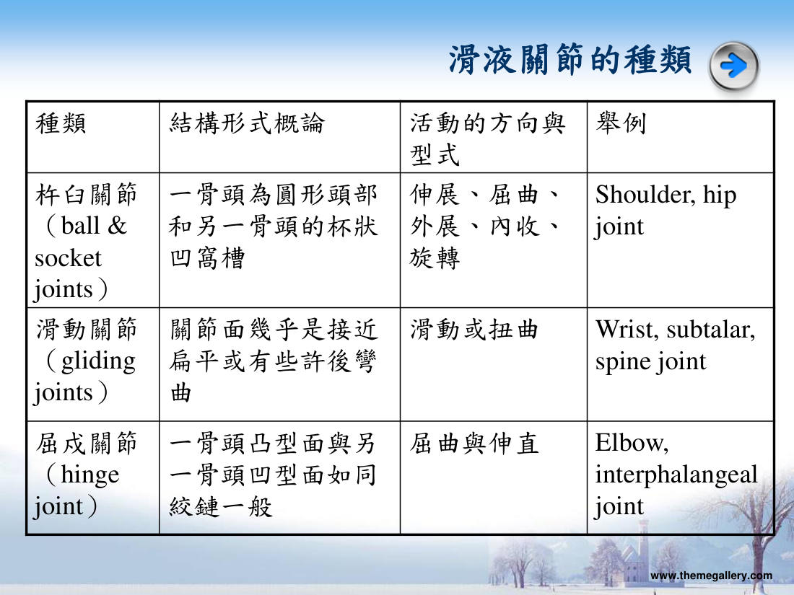
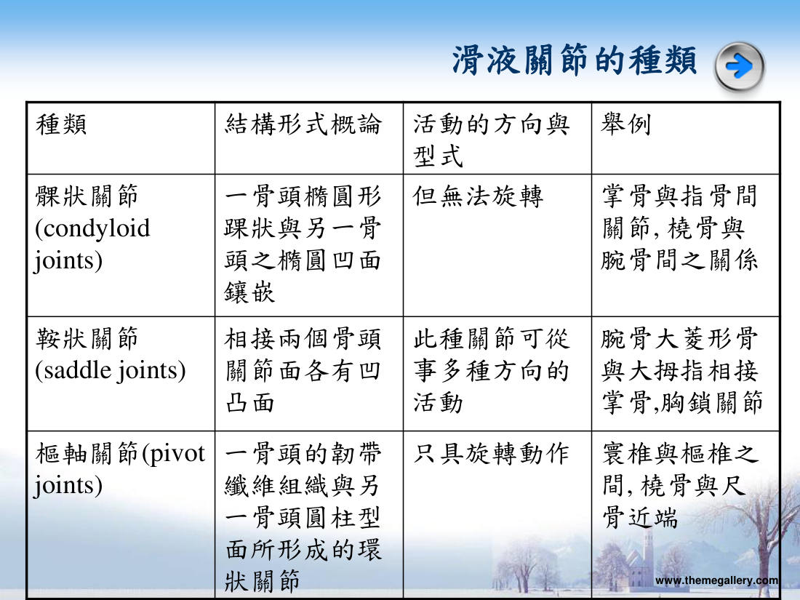
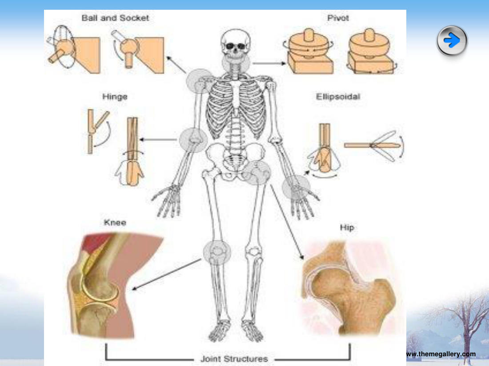
易混淆
橢圓／髁狀關節：能屈伸、外展內收，不能旋轉；杵臼關節才有旋轉。鞍狀關節（拇指 CMC、胸鎖關節）可多方向，但構造是雙向凹凸。
樞軸關節「只有旋轉」：寰樞關節、橈尺近端。
記憶口訣
杵（肩髖）、滑（腕距脊）、屈戍（肘指）、髁（掌指橈腕）、鞍（拇指胸鎖）、樞（寰樞橈尺）。
五、關節面滑動凹凸原則（p.12–13）
凹凸原則Concave-convex relationship（關節運動學 arthrokinematics：roll、slide、spin）：
| 移動的骨頭 | 關節面滑動 (slide) 方向 |
|---|---|
| 凸面在凹面上移動 (convex on concave) | 滑動方向與骨頭角動作方向相反 (opposite) |
| 凹面在凸面上移動 (concave on convex) | 滑動方向與骨頭角動作方向相同 (same) |
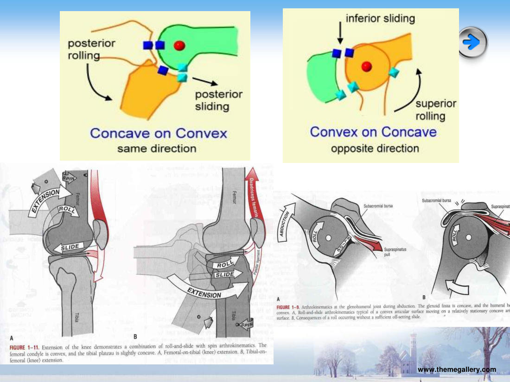
必背重點
凸動凹 → 滑動反向（例：肩外展，肱骨頭凸面往上 rolling、往下 slide——superior rolling／inferior sliding）；凹動凸 → 滑動同向（例：膝伸直時脛骨平台在股骨髁上，同向滑動）。
易混淆
骨運動學 osteokinematics＝骨頭的大角度運動（量角器測 ROM）；關節運動學 arthrokinematics＝關節面間的 roll／slide／spin 微小運動。
六、牛頓運動定律（p.14）
| 定律 | 內容 |
|---|---|
| 第一：慣性定律Law of inertia | 動者恆動、靜者恆靜 |
| 第二：加速度定律Law of acceleration | F = ma，作用力＝質量×加速度 |
| 第三：作用與反作用定律Law of action-reaction | 甲物對乙物施力，乙物會以大小相等、方向相反的力回作用在甲物上 |
七、槓桿 槓桿Lever（p.15–18）
槓桿是一種簡單機械，用來改變力量的大小與方向。F＝支點 (fulcrum)，W＝阻力／重力 (resistance)，E＝作用力 (effort)。
| 類型 | 排列 | 特性 | 人體例子（講義） |
|---|---|---|---|
| 第一類 | 支點在中央（E－F－W） | 跷跷板型；可改變力的方向 | 抬頭（點頭）：支點＝枕寰關節；阻力＝頭顱前面被移動的重力；作用力＝背部（頸伸）肌肉收縮 |
| 第二類 | 阻力在中央（F－W－E） | 力臂 > 阻力臂，省力 | 踮腳尖：支點＝腳趾基部（蹠趾關節）肉球；阻力＝身體重量；作用力＝小腿肌（腓腸肌、比目魚肌）收縮 |
| 第三類 | 作用力在中央（F－E－W） | 力臂 < 阻力臂，費力但速度／範圍大 | 前臂舉重：支點＝肘關節；阻力＝前臂加手中物體重量；作用力＝肱二頭肌收縮 |
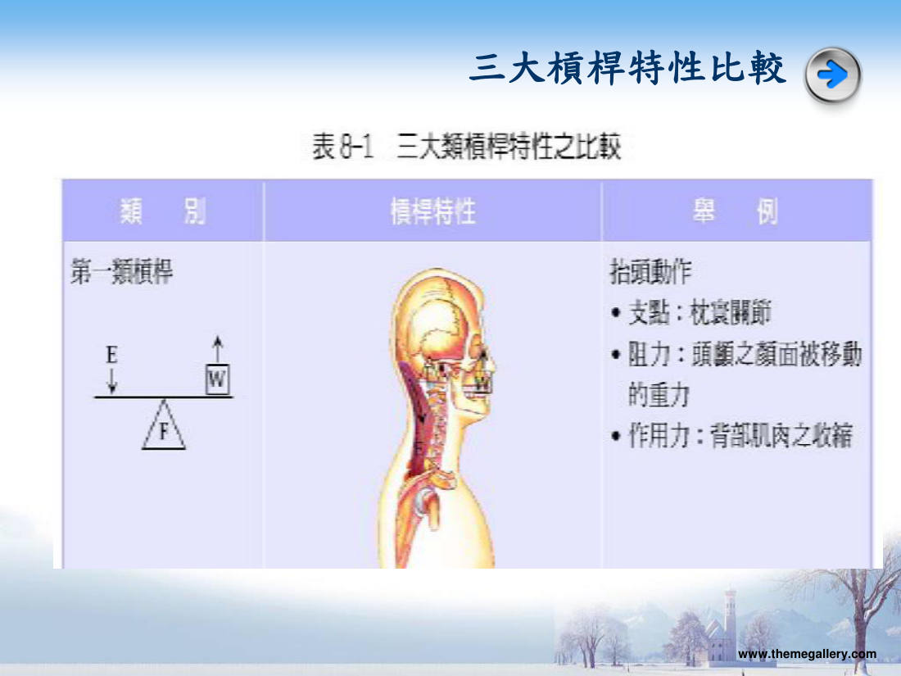
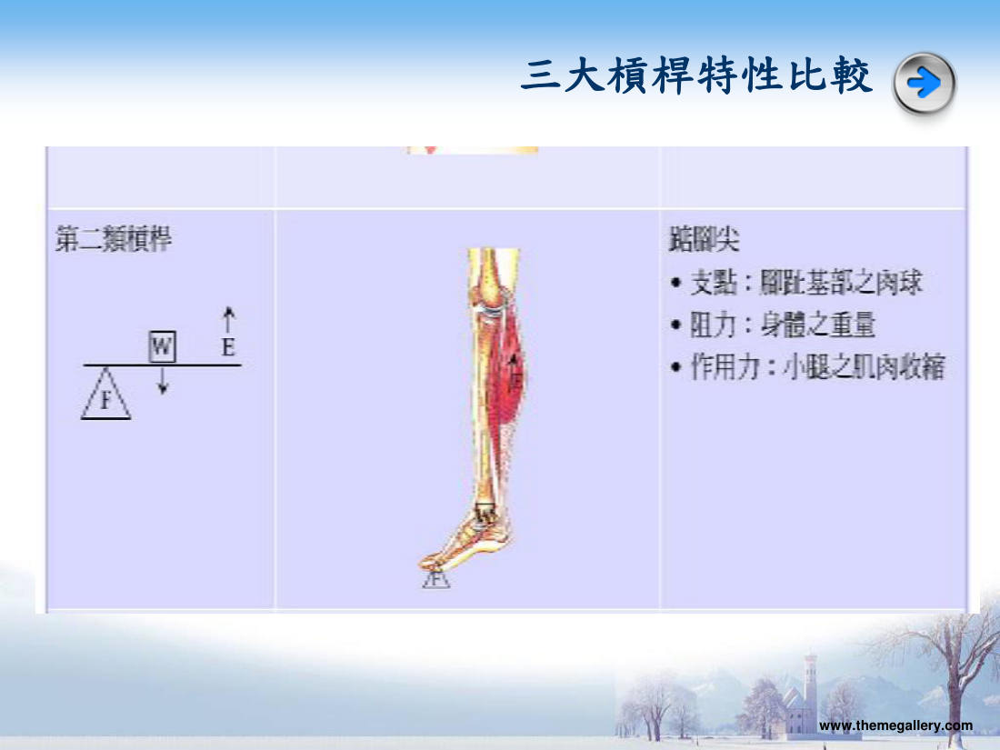
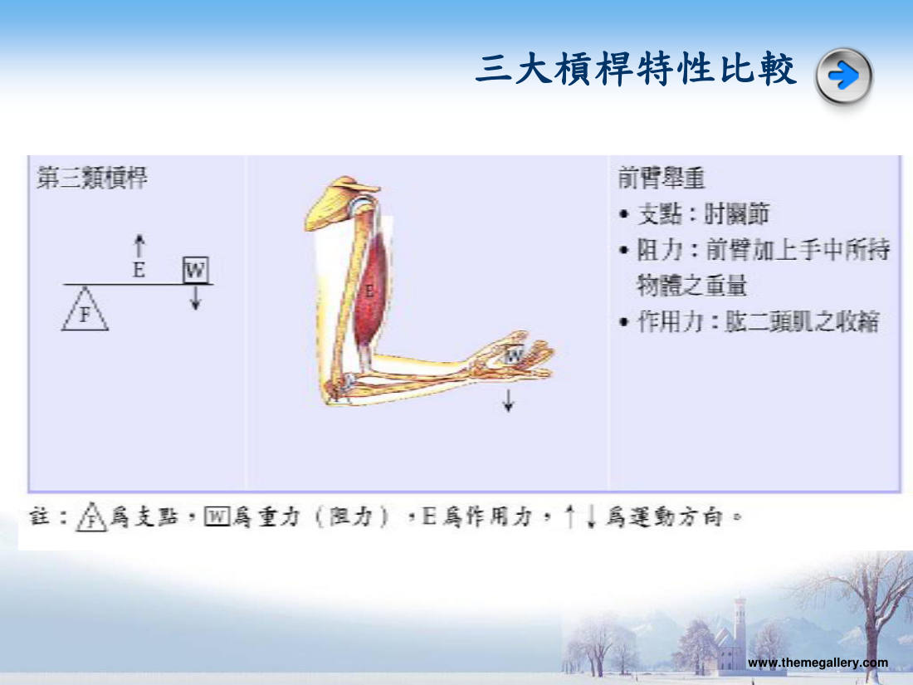
必背重點
人體以第三類槓桿最普遍。非承重（開放鏈）時，脛前肌收縮使踝背屈也是第三類槓桿。
記憶口訣
看「誰在中間」：一支點、二阻力、三作用力在中間（類別數字＝中間者的順序：支點1、重力2、施力3）。
易混淆
第二類的「力臂大於阻力臂」（省力）vs 第三類的「力臂小於阻力臂」（費力）。踮腳尖是第二類（體重在中間），肱二頭肌彎舉是第三類（肌肉附著點在中間）。
對照解剖生理：骨骼肌運動與命名
八、阻力運動（收縮）的種類（p.19–23）
| 類型 | 定義 | 優點 | 缺點／注意 |
|---|---|---|---|
| 等長收縮Isometric | 靜態收縮，用力時肌肉長度不變。須持續收縮6 秒才有增進肌力效果 | 增加關節穩定度；適合急性癒合期，可延緩肌肉萎縮 | — |
| 等速收縮Isokinetic | 包括向心與離心；速度維持不變，阻力隨肌力大小調整 | 各角度皆可接受最大劑量訓練；可在不同速度訓練 | 儀器昂貴；大多僅能做開放鏈；不宜急性期；訓練速度每秒不可超過 120 度 |
| 等張收縮Isotonic | 向心、離心或兩者合併；在活動範圍內對抗固定負荷。負荷用 RM（repetition maximum）表示：1 RM＝盡全力只能舉 1 次的重量；RM 越小，重量越大 | 與日常生活用力方式相近 | 最大肌張力只發生在某一段範圍，無法在每一角度都達最大訓練 |
離心 vs 向心收縮（p.22）
| 項目 | 離心收縮 Eccentric | 向心收縮 Concentric |
|---|---|---|
| 最大收縮產生的力 | 較大 | 較小 |
| 運動速度加快時 | 力下降較慢 | 力下降較快 |
| 徵召的動作單位（產生同樣的力） | 較少 | 較多 |
| 同樣慢速下 | 產生較大的力 | 產生較小的力 |
| 收縮的肌肉張力 | 大 | 小 |
| 日常生活活動 | 多 | 少 |
| 遲發性肌肉酸痛 DOMS | 最易引起 | 較少 |
| 撕拉傷 | 較容易產生 | 較不易 |
必背重點
肌肉張力大小：eccentric > isometric > concentric（p.23）。離心收縮「肌肉在被拉長中收縮」，耗能反而較少（用較少 motor unit 就能撐同樣的力）。
易混淆
離心＝肌肉變長（如下樓、慢放啞鈴）；向心＝肌肉變短；等長＝長度不變；等速＝速度恆定（不是負荷恆定，等張才是負荷固定）。
記憶口訣
「離心力大、少徵召、易痠痛、易拉傷」。
九、肌肉的被動活動（p.24–25）
- 被動不足Passive insufficiency：某主動肌收縮引起關節動作時，若其拮抗肌為跨兩個（以上）關節的肌肉，且已在所經過的關節同時被拉到最長，使主動肌無法再進一步產生關節動作 → 關節活動度不足。
例：髖屈曲＋膝屈曲 115–125°；髖屈曲＋膝伸直 60–80°（膝伸直時後大腿肌群（hamstrings）被拉緊，限制髖屈曲）。 - 肌腱作用／腱固定作用Tendon action (tenodesis)：主動肌無力或放鬆時，拮抗肌收縮的動作將主動肌拉緊 (stretch)，產生的被動張力會使主動肌所經過的關節產生動作，看似主動肌自行收縮，其實是被牽拉造成的被動動作。
易混淆
Passive insufficiency＝拮抗肌太緊限制動作；Active insufficiency＝主動肌縮到太短無力。Tenodesis＝肌腱被牽拉帶出的被動動作。
十、肌肉長度－張力關係（p.26–27、30）
肌肉力量／最大自主收縮 (maximum voluntary contraction, MVC)。離體肌肉 (detached muscle) 以靜止長度 (resting length) 為基準：
| 相對靜止長度 | 現象 |
|---|---|
| < 50% | 肌纖維太鬆，無法產生主動張力 |
| 50–110% | 張力快速上升 |
| 110% | 達最大張力（即比靜止長度稍長） |
| 110–170% | 主動張力逐漸下降 |
| > 170% | 曲線再上升，是因為被動張力增加 |
| 200% | 瀕臨撕裂 (tearing point) |
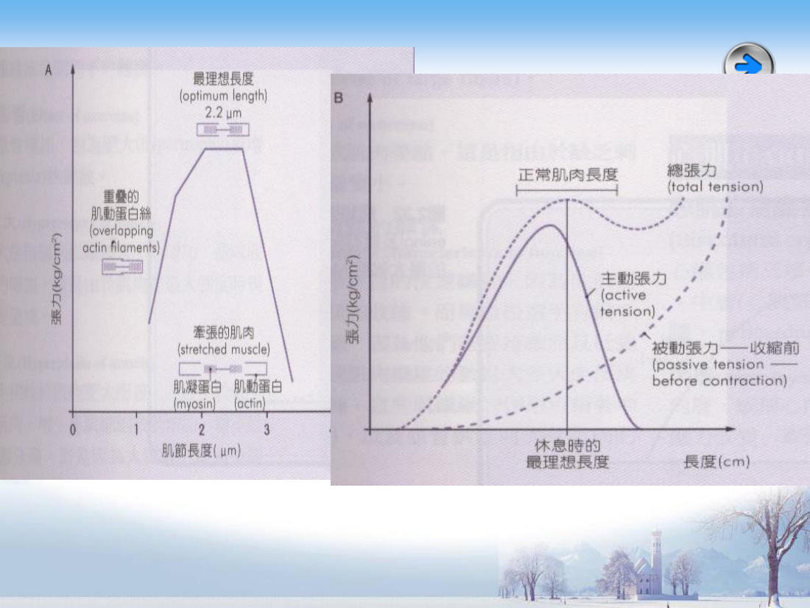
必背重點
最大主動張力在比休息長度稍長時；繼續拉長，主動張力先增加後減少（被動張力則持續上升，總張力＝主動＋被動）。理想肌節長度約 2.2 μm（粗細肌絲重疊最佳）。
對照解剖生理：肌肉組織總論
十一、骨骼肌概論與構造（p.32–36）
- 肌肉組織＝具收縮性的組織，包括骨骼肌、心肌、平滑肌；約占體重 40–50%；肌肉系統通常專指骨骼肌系統。
- 層級：肌肉 → 肌束 fasciculus → 肌纖維（肌細胞）muscle fiber → 肌原纖維 myofibril → 肌絲 myofilament（粗肌絲 myosin／細肌絲 actin）。
- 其他構造：肌纖維膜 肌纖維膜sarcolemma、肌漿 肌漿sarcoplasm、粒線體 mitochondria、肌小節 肌小節sarcomere；Z line、A band、H zone、I band。
結締組織包膜
| 構造 | 位置／特性 |
|---|---|
| 筋膜Fascia 淺層 superficial fascia | 皮下層，由脂肪組織與疏鬆結締組織組成 |
| 深層筋膜 deep fascia | 皮下組織的深層，緻密、不含脂肪的結締組織，覆蓋肌肉表面 |
| 肌外膜Epimysium | 包覆整條肌肉；伸入肌肉內把肌肉分成許多肌束 (fascicles) |
| 肌束膜Perimysium | 包住每一條肌束；再伸入肌束內形成肌內膜 |
| 肌內膜Endomysium | 包住每一條肌纖維（肌細胞）（投影片寫直徑約 1–2 μm，與一般 10–100 μm 不符，應為投影片筆誤） |
以上三層都可能延伸到肌肉之外，形成肌腱 tendon。
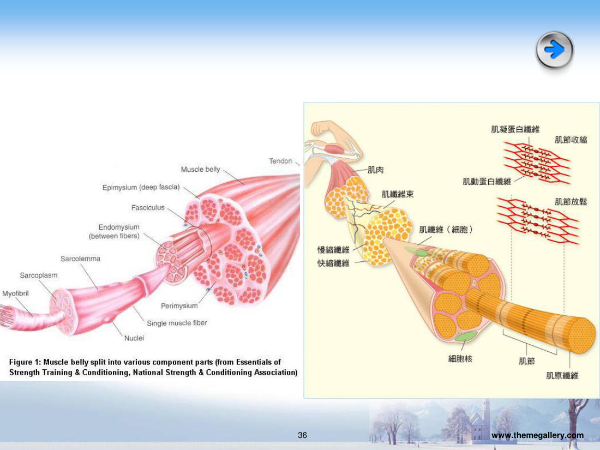
記憶口訣
由外到內：外（Epi）整條 → 束（Peri）每束 → 內（Endo）每條纖維。
十二、肌節與滑動絲理論（p.37–41）
- 肌節長度：放鬆 2.5 μm；完全收縮約 1.5 μm；被拉長約 3.0 μm。
- 肌節Sarcomere＝兩相鄰 Z 線之間的肌原纖維。
- Z 線：細肌絲（actin）連接處。 M 線：聯繫相鄰的粗肌絲。 H 區：只含粗肌絲。 A 帶：粗肌絲全長（暗帶）。 I 帶：只含細肌絲（明帶）。
| 收縮時 | 變化 |
|---|---|
| Z 線 | 被細肌絲拉近，肌節變短 |
| A 帶 | 不變（粗肌絲長度不變） |
| I 帶 | 變窄 |
| H 區 | 變窄，用力收縮可消失 |
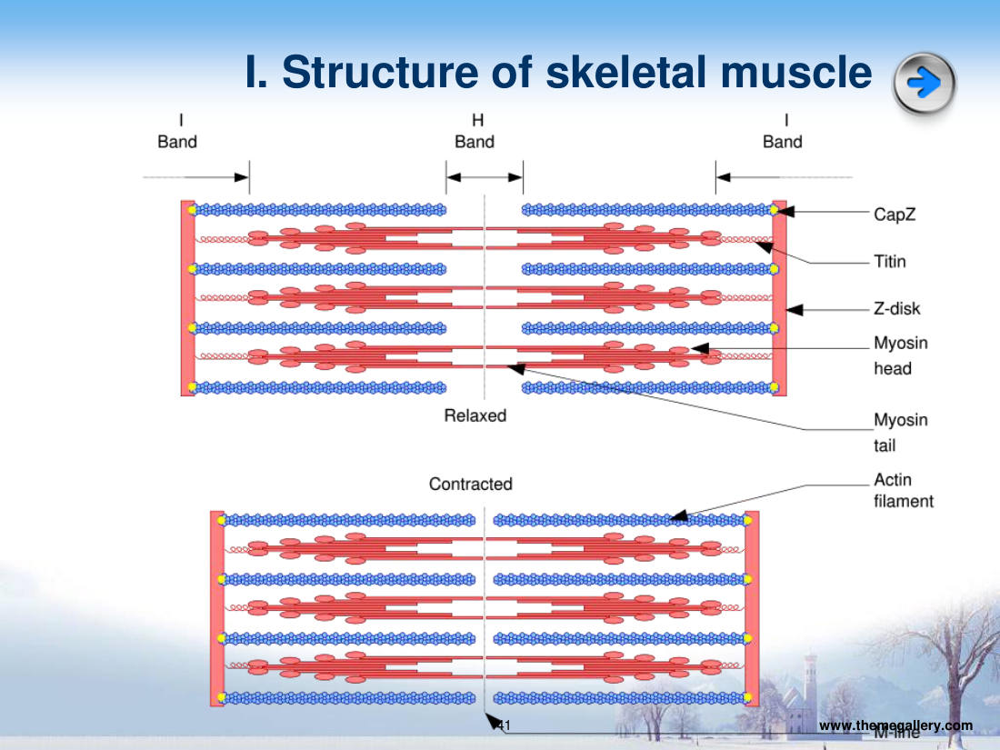
必背重點
滑動絲學說Sliding filament theory：收縮時粗肌絲的肌凝蛋白橫橋 (cross bridge) 與細肌絲肌動蛋白結合，細肌絲滑入粗肌絲之間；不是蛋白本身縮短（橫橋學說 cross bridge theory）。唯一長度不變的是粗肌絲／A 帶。
記憶口訣
收縮「I、H 縮，A 不變」；「Z 往中間靠」。
十三、興奮收縮耦合與放鬆（p.39、42–47）
膜電位與動作電位
- 靜止膜電位Resting membrane potential：離子分布不均，細胞膜對 K⁺ 通透性大、對 Na⁺ 小 → K⁺ 外流；當向外的濃度擴散力與阻止 K⁺ 外流的電場力相等，膜內外電位差穩定。
- 動作電位Action potential：刺激使 Na⁺ 通道開放，Na⁺ 順濃度梯度大量內流 → 去極化，膜內變正。去極化達閾值 −55 mV 才會激發。
- 全有全無定律All-or-none law：達閾值就產生一個大小固定的完整動作電位，未達閾值則不產生。
- 傳導：無髓鞘纖維＝局部電流連續傳導；有髓鞘纖維＝跳躍式傳導 (saltatory)（越過髓鞘段，在蘭氏結）。
神經肌肉接合與收縮步驟
- 神經肌肉接合處 myoneural junction釋放 乙醯膽鹼Acetylcholine, ACh；由膽鹼酯酶Cholinesterase分解。
- 動作電位沿肌纖維膜傳入橫小管 (T system / transverse tubular system)，加速傳到肌纖維所有部分。
- 肌漿網 SR (sarcoplasmic reticulum)：貯存並釋放 Ca²⁺。終末池 Ca²⁺ 通道開放，Ca²⁺ 流入肌漿。
- Ca²⁺ 與肌鈣蛋白 troponin 的 C 單位結合 → 蛋白構型改變 → 暴露 actin 上的活化位(active site) → 橫橋結合，ATP 分解提供能量 → 粗細肌絲滑行，肌纖維縮短。
- 放鬆：肌漿網以主動運輸把 Ca²⁺ 打回肌漿網 → 肌漿 Ca²⁺ 濃度下降 → Ca²⁺ 與 troponin 分離 → 肌肉舒張。
必背重點
內質網兩個互相交織的系統：T 系統＝加速傳導動作電位；SR＝貯存／釋放 Ca²⁺。收縮的兩大事件：(1) 刺激暴露 actin 活化位；(2) 化學反應（ATP）提供主動張力的能量。
對照解剖生理：肌肉組織總論、結締、肌肉與神經組織
十四、肌纖維型態（p.48–51）
| 項目 | Type I 慢縮 (SO) | Type IIa 快縮 (FOG) | Type IIb 快縮 (FG) |
|---|---|---|---|
| 全名 | Slow-twitch Oxidative，紅肌 | Fast-twitch Oxidative Glycolytic，快速-氧化醣解 | Fast-twitch Glycolytic，快速-醣解，白肌 |
| 直徑 | 小 | 中 | 大 |
| 顏色 | 紅 | 紅 | 白 |
| 肌紅蛋白 | 高 | 高 | 低 |
| 粒線體 | 大量 | 大量 | 稀少 |
| ATP 主要來源 | 氧化磷酸化 | 有氧醣解 | 醣解（無氧） |
| 氧化酵素 | 高 | 中 | 低 |
| 醣解酵素 | 低 | 中 | 高 |
| 收縮速度 | 慢 | 快 | 最快（投影片表列為「中」） |
| 疲乏速度 | 慢 | 中 | 快 |
說明：講義 p.51 表格欄位標題把 IIB（Intermediate）與 IIA 排反了，而 p.48 文字定義 IIa＝FOG、IIb＝FG，上表依 p.48 與數值內容（中間型＝IIa、白肌／最易疲勞＝IIb）整理；收縮速度列亦疑似排序錯誤。
- 慢縮：粒線體與肌紅蛋白多、血供充足 → 有氧代謝與 ATP 生成佳，耐勞；用於長時間低強度耐力活動。
- 快縮：醣原儲備與相關酵素活性高 → 強而有力；用於短時間高強度活動。
徵召順序與分布
- 一般先徵召慢肌纖維，再視強度、時間、疲勞加入快肌。中等強度：慢肌＋IIa；持續則加入 IIb；高強度則快速依序加入。
- 例：小腿比目魚肌 soleus 比其他腿肌多 25–40% 慢肌；三頭肌 triceps 比其他手部肌肉多 10–30% 快肌。多數肌肉慢、快接近各半。
- 耐力運動員慢肌比例較高；非耐力運動員快肌比例比不運動的人高。
必背重點
Type I＝紅、小、慢、耐疲勞、有氧；Type IIb＝白、大、快、易疲勞、無氧醣解；IIa 居中。徵召順序：I → IIa → IIb。
記憶口訣
「I 慢紅耐、IIb 白快脆」；由小到大、由慢到快依序上場。
十五、運動單位（p.52–55）
- 運動單位Motor unit＝一個運動神經元 + 其軸突 + 它所支配的所有肌纖維。
- 一條運動神經纖維支配的肌纖維數：最少約 5 條（眼肌），最多 1000 條以上（大肌肉）。
- 神經支配比Innervation ratio：某肌肉中平均每個 motor unit 的肌纖維數。眼肌小（精細控制），大肌肉大。
- 全有全無律：同一運動單位內所有肌纖維幾乎同時收縮或放鬆。
- 肌力分級（增加力量）三方式：(1) 一開始先用神經支配比最小者；(2) 增加被徵召的運動單位數目；(3) 增加刺激頻率。
- 大小原則Size principle：最小（最低閾值）的運動神經元最先徵召，最大（高閾值、收縮最大最快）的最後徵召。
十六、神經纖維分類（p.56–57）
- 神經幹含：運動纖維、感覺纖維、自主神經纖維。
- Type A：最粗、有髓鞘，分 Aα（約 20 μm）、Aβ、Aγ、Aδ；傳導最快（最高約 120 m/s）。
- Type B：有髓鞘。 Type C：無髓鞘、約 0.5 μm、傳導約 0.5 m/s，傳痛覺。
- 平均傳導速度 50–70 m/s；一個反射弧約 28 ms。
| 感覺纖維分類 | 來源 |
|---|---|
| Group Ia | 肌梭初級末梢 (primary receptor) |
| Group Ib | 高爾基腱器 (Golgi tendon organ) |
| Group II | 肌梭次級末梢 (secondary receptor) |
中樞神經元：上運動神經元 upper motor neurons；中間神經元 interneurons。
十七、關節、肌腱與肌肉受器（p.58–73）
關節受器 Joint receptors
位於關節囊與韌帶，依作用於關節的變形力之位置與大小產生反應。
高爾基腱器 高爾基腱器Golgi tendon organ, GTO
- 位於肌腱，靠近肌纖維與肌腱的附著處（梭外肌與肌腱交界），與肌纖維串聯；直徑約 0.1–1 mm；受 Ib 傳入纖維支配。
- 偵測肌肉張力（收縮力量）的改變；肌肉過度收縮時被興奮 → 經抑制性中間神經元抑制作用肌、興奮拮抗肌 → 限制產生的力在組織可承受範圍（保護作用）。
- 放電閾值較高，張力快速變化（猛收縮／放鬆）才明顯發放。
肌梭 肌梭Muscle spindle
- 由 3–10 條細小的梭內肌纖維 (intrafusal fibers) 組成，梭形，長約 0.5–13 mm（p.64 另寫 3–10 mm）；幾乎所有肌肉都有，以手臂與腿最多。
- 功能：感覺肌肉長度及梭外肌長度變化的速率。
- 兩種梭內纖維：
a. 核袋纖維 nuclear bag（細胞核集中在中央「袋」）→ 初級 Ia 傳入；
b. 核鏈纖維 nuclear chain（細胞核沿纖維排成鏈狀）→ 次級 II 傳入。 - 感覺末梢位於肌梭中央（無收縮性）；兩端可收縮，由 γ 運動神經元 (Aγ) 支配（投影片寫成 r）。
- 梭外肌由 Aα 運動神經元支配；梭內肌由 Aγ 支配（可調整感受長度變化的敏感度）。
- 牽張肌梭的非收縮部分有兩種機制：整條肌肉被拉長、γ 運動神經興奮。
- 反射收縮時間約 100–200 ms。
| 末梢 | 偵測 | 活動型式 |
|---|---|---|
| 初級 (Ia) | 牽張的速度 (velocity) | phasic（變化率）＋ tonic（最終結果），興奮被拉長肌的 α 運動神經元、抑制拮抗肌 α 運動神經元 |
| 次級 (II) | 牽張的量 (amount) | 只有 tonic |
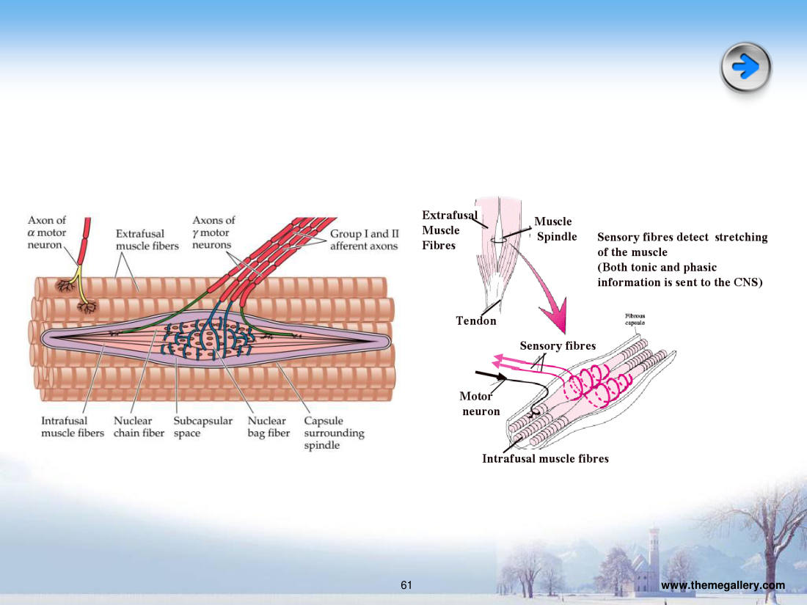
| 肌梭 Muscle spindle | 高爾基腱器 GTO | |
|---|---|---|
| 位置 | 肌肉內，與梭外肌並聯 | 肌腱，與肌纖維串聯 |
| 感覺 | 肌肉長度及其變化速率 | 肌肉張力 |
| 傳入纖維 | Ia（初級）、II（次級） | Ib |
| 反射效果 | 興奮同一肌肉、抑制拮抗肌（牽張反射） | 抑制同一肌肉（作用肌）、興奮拮抗肌（反向牽張反射） |
| 角色 | 細調裝置 | 粗調裝置 |
必背重點
肌梭＝長度與速度（Ia：速度；II：量），維持姿勢性肌張力；GTO＝張力，保護肌肉免於過度用力。兩者都屬反饋控制系統。
梭外肌：Aα；梭內肌：Aγ。肌梭：梭外變短 → 發放頻率降低；梭外變長 → 肌梭被牽張、衝動增多。
易混淆
Ia（肌梭初級）vs Ib（GTO）vs II（肌梭次級）；Aα（梭外）vs Aγ（梭內）；肌梭＝並聯測長度，GTO＝串聯測張力。
記憶口訣
「梭長腱張」：肌梭管長度、腱器管張力；「Ia 速、II 量、Ib 腱」。
骨骼肌特性總結（p.73）
- 物理特性：伸展性、彈性、黏滯性；生理特性：興奮性、收縮性。
- 收縮分類：向心、等長、離心、等動（等速）收縮。
- 肌纖維依收縮速度分快、慢；依收縮及代謝特徵分 SO / FOG / FG；依顏色分快縮白、快縮紅、慢縮紅；Brooke 分 I 型與 II 型。
- 低強度運動：慢肌先動員；強度大：快肌也加入。
肩關節複合體：骨骼構造與關節基本特性
肩關節複合體（肩關節複合體Shoulder Complex）= 肩帶（shoulder girdle）＋盂肱關節，由多個關節協同完成手臂的大範圍活動。
1. 肩胛骨 肩胛骨scapula
- 與胸廓chest wall第 2～7 根肋骨相對；是 17 塊肌肉的附著處。
- 兩個突起：喙突coracoid process、肩峰acromion process。
- 喙突：聯合肌腱conjoined tendon（肱二頭肌短頭 biceps short head ＋ 喙肱肌 coracobrachialis）的起點；胸小肌（pectoralis minor）止點；喙肱韌帶、喙肩韌帶附著處（講義寫「鳥喙肱韌帶及肩胛橫韌帶」）。
- 肩峰：由肩胛棘scapular spine向外側延伸的寬而扁突出，覆蓋在肱骨頭上方，是三角肌起點之一。
- 肩盂glenoid（關節盂）與肱骨頭形成肩關節；大小與肱骨頭不成比例，接觸面小 → 活動度大、穩定度差。
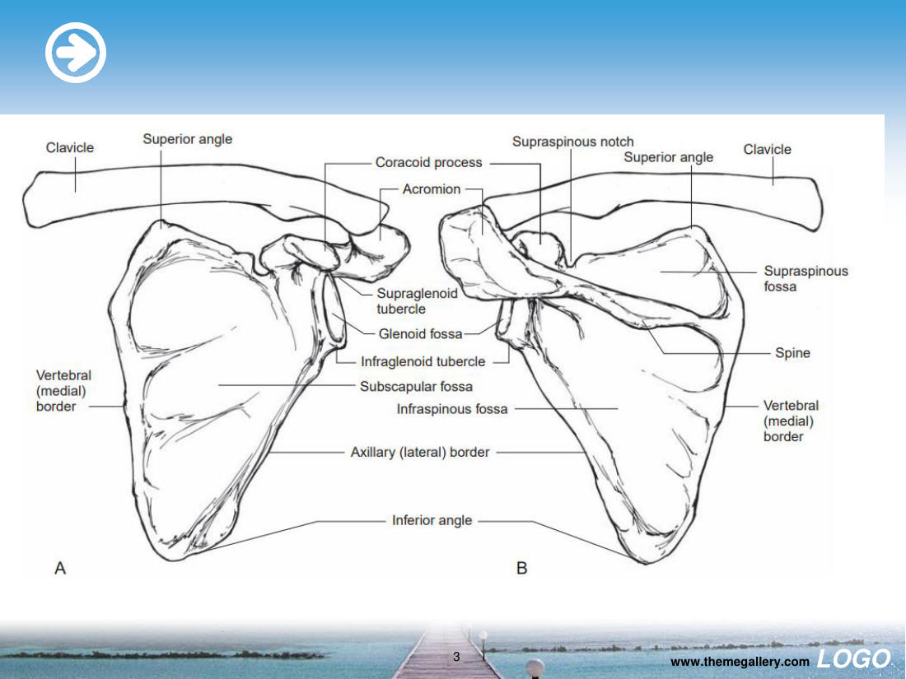
2. 肱骨頭 肱骨頭humeral head
- 相對於遠端肱骨上髁軸trans-epicondylar axis，肱骨頭向後轉約 30°（後傾retroversion）。
- 關節面周圍的結節是旋轉肌袖rotator cuff 4 條肌腱的附著處：
- 大結節greater tuberosity：棘上肌 supraspinatus、棘下肌 infraspinatus、小圓肌 teres minor
- 小結節lesser tuberosity：肩胛下肌 subscapularis
- 大、小結節之間為二頭肌溝bicipital groove，肱二頭肌長頭肌腱通過；溝上有橫韌帶transverse (humeral) ligament，防止肌腱滑出。
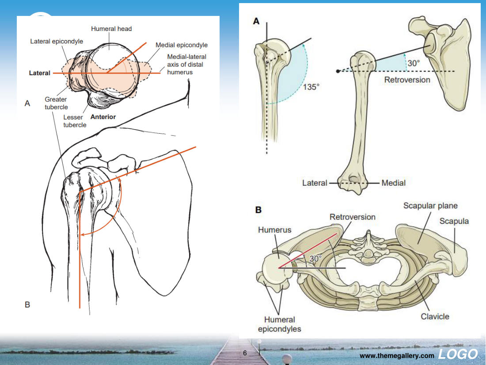
記憶口訣
大結節＝「上下小（棘上、棘下、小圓）」；小結節＝肩胛下肌（SITS 中的 S 在小結節）。
3. 旋轉肌袖 旋轉肌袖rotator cuff（SITS）
| 肌肉 | 止點 | 盂肱關節主要動作 |
|---|---|---|
| 棘上肌 supraspinatus | 大結節 | 外展 Abd |
| 棘下肌 infraspinatus | 大結節 | 外轉 ER、內收 Add |
| 小圓肌 teres minor | 大結節 | 外轉 ER、內收 Add |
| 肩胛下肌 subscapularis | 小結節 | 內轉 IR |
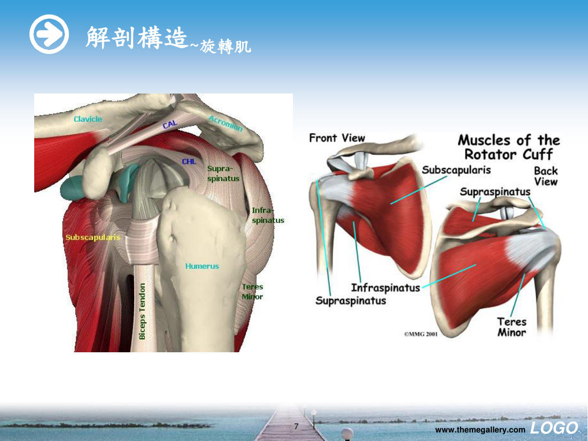
4. 盂肱關節的基本特性
- 杵臼關節ball-and-socket joint（球窩、spheroidal），不具關節盤；3 度自由度。
- 關節活動度（ROM）：肩關節（0–180°）＞ 髖關節（0–120°）＞ 腕關節 ＞ 肘關節。
- 肩關節為第三級槓桿（支點－施力點－受力點，施力點在中間）：力臂短、費力，但可得到較大速度與活動長度。
- 運動中減速時，肩關節產生的力矩以向後剪力方向最大。
- 骨性穩定度差（little bony stability）→ 靠肌肉收縮穩定。
5. 防止脫臼的韌帶
- 喙肱韌帶coracohumeral lig.、盂肱韌帶glenohumeral lig.、肱橫韌帶transverse humeral lig.、盂脣glenoid labrum。
- 斜方韌帶trapezoid lig.＋圓錐韌帶conoid lig. = 喙鎖韌帶（喙骨鎖骨韌帶coracoclavicular lig.），連接鎖骨與喙突。
- 關節囊加強結構：喙肱韌帶、上／中／下盂肱韌帶、肱二頭肌長頭肌腱、肱三頭肌長頭肌腱、旋轉肌袖肌腱。
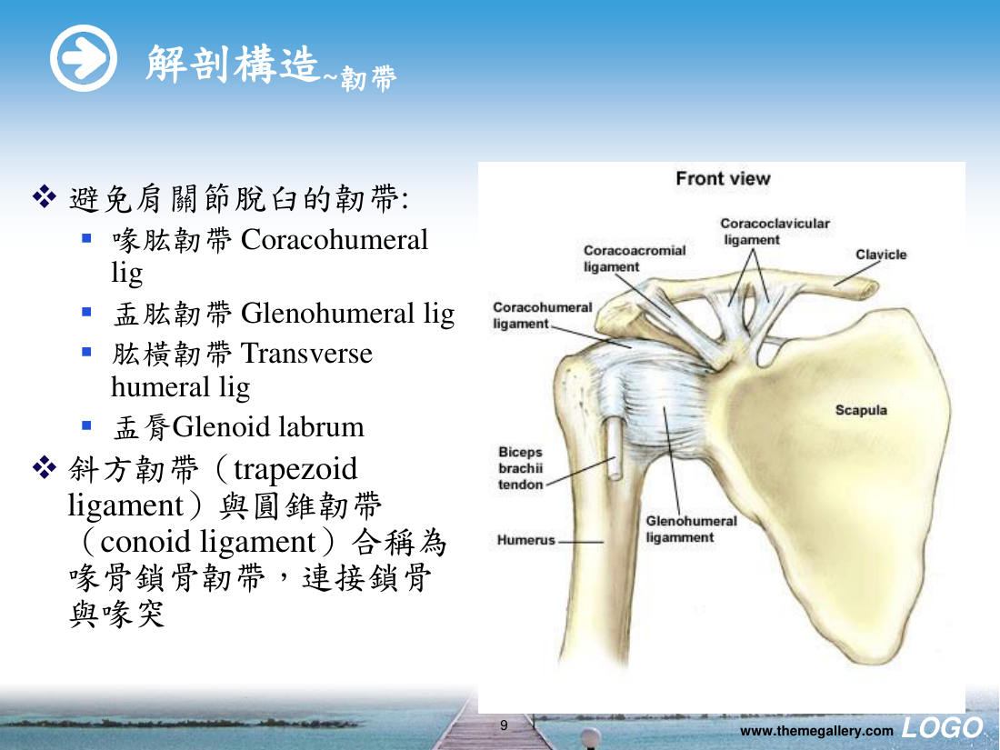
易混淆
喙鎖韌帶（斜方＋圓錐，鎖骨↔喙突，穩定 AC 關節最重要）≠ 喙肩韌帶（喙突↔肩峰，構成喙肩弓）≠ 喙肱韌帶（喙突↔肱骨，防盂肱脫臼）≠ 肋鎖韌帶（第 1 肋↔鎖骨，SC 關節）。
6. 盂肱關節動力學（關節面滑動方向）
| 肱骨頭滑動方向 | 對應動作 |
|---|---|
| 向前 | 伸直、外轉、水平外展 |
| 向後 | 屈曲、內轉、水平內收 |
| 向下 | 外展 |
| 向上 | 內收 |
必背重點
- 骨動作時，凸面（肱骨頭）滑動方向與骨動作方向相反。
- 肩胛骨移動時，凹面（關節窩）滑動方向與肩胛骨動作方向相同。
- 肩關節活動時肱骨頭向後滑動，容易伴隨肩部內旋。
7. 盂肱關節的動作範圍
- 動作：屈／伸（含 hyperflexion / hyperextension）、外展／內收、外轉（ER）／內轉（IR）、水平外展／水平內收、環轉（circumduction）。
- 外展量取決於旋轉：關節完全內轉 → 主動外展只有 60°（大結節撞肩峰與喙肩韌帶）；外轉 90° → 外展可達 90°（三角肌主動不足）。
- 旋轉量隨手臂高度改變：手臂放身側時 ER＋IR 共 180°；手臂完全上舉時只剩 90°（喙肱韌帶與盂肱韌帶扭轉繃緊，關節囊處於最緊位置）。
肩帶關節（Shoulder girdle joints）與肩胛肱骨節律
講義列出的關節：A. 肩胛胸廓關節 ST、B. 胸鎖關節 SC、C. 肩鎖關節 AC、D. 盂肱關節 GH，另有 E. 肩峰下（上肱）關節。
| 關節 | 類型／特色 | 重點 |
|---|---|---|
| ST 肩胛胸廓 scapulothoracic | 無骨性關節 → 假關節／功能性關節 | 聳肩、下壓、前突、後縮、向上／向下旋轉 |
| SC 胸鎖 sternoclavicular | 鞍狀 sellar，有關節盤，3 度自由度 | 唯一連接上肢與胸腔的關節 |
| AC 肩鎖 acromioclavicular | 3 度自由度（抬高、外展、旋轉） | 喙鎖韌帶最重要 |
| GH 盂肱 glenohumeral | 杵臼 ball & socket，3 度自由度 | 骨性穩定差，靠肌肉 |
A. 肩胛胸廓關節（ST）
- 動作：上提／聳肩elevation、下壓depression、前突（外展）protraction/abduction、後縮（內收）retraction/adduction、向上旋轉upward rotation、向下旋轉downward rotation。
- 下壓：穩定肩胛骨並抬高身體（如撐拐杖／雙槓撐起），身體可抬高約 4–6 吋（10–15 cm）。
- 向上旋轉：全肩上舉時範圍最大；向下旋轉：手放背後時達最大範圍。
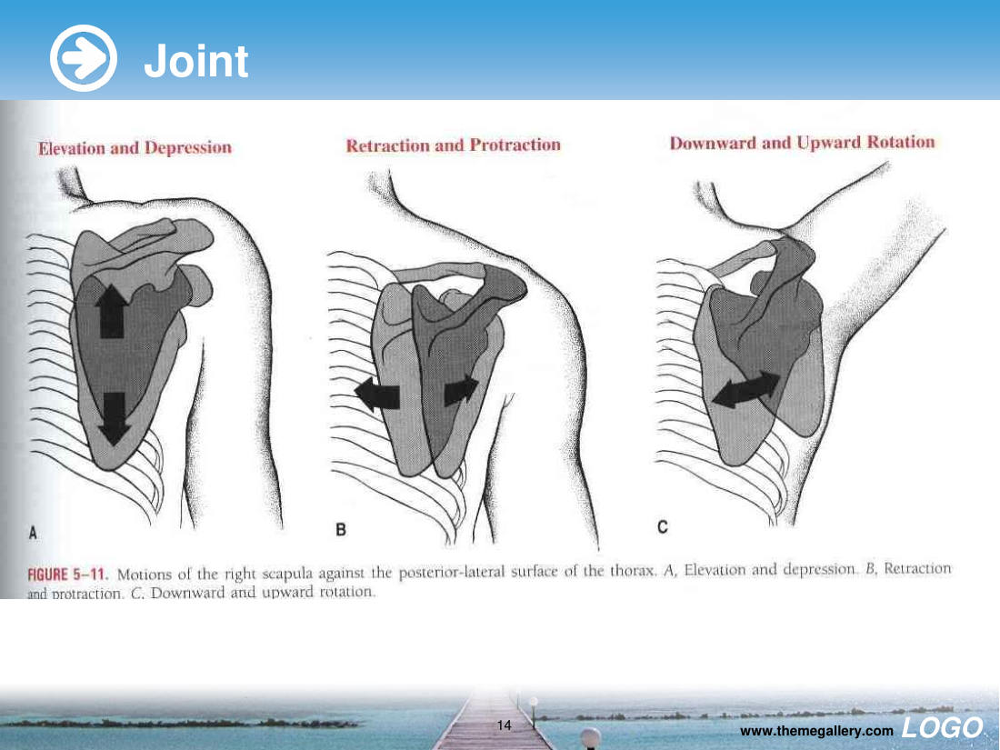
B. 胸鎖關節（SC）
- 鞍狀關節（sellar）、具關節盤、3 度自由度；結構與拇指腕掌關節（CMC）相同。
- 鎖骨通常在關節脫臼之前先骨折。
- 韌帶：鎖骨間韌帶interclavicular lig.（橫越兩鎖骨間）、前後胸鎖韌帶anterior & posterior SC lig.（關節囊韌帶）、肋鎖韌帶costoclavicular lig.（第 1 肋下方）；胸鎖乳突肌（SCM）近端肌腱附著也加強穩定。
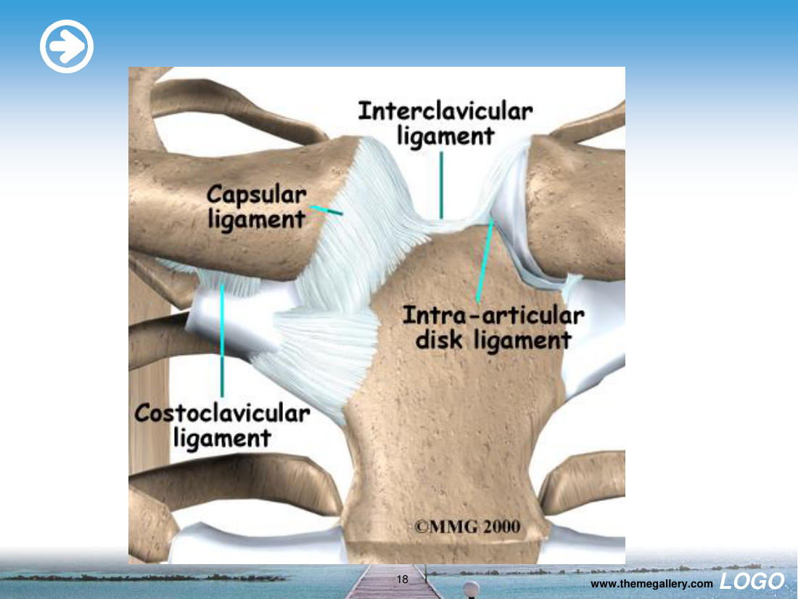
| 項目 | 數值／說明 |
|---|---|
| 抬高／下壓軸 | 斜軸，穿過鎖骨胸骨端，向後下方 |
| 鎖骨抬高（elevation） | 30–45°，多數發生在手臂上舉前 90° |
| 下壓（depression） | 自休息位可下壓 5–10°，被第 1 肋擋住 |
| 前突／後縮 | 繞近乎垂直軸（穿過胸骨柄）；休息位前突 15°、後縮 15° |
| 鎖骨軸向旋轉 | 肩上舉超過 90° 後出現，對完全向上旋轉與肩上舉必要；因鎖骨 S 形，肩峰端升高；由喙鎖韌帶（斜方＋圓錐）拉緊引起 |
必背重點
- SC 關節面滑動：鎖骨向上 → 關節面向下滑；向下 → 向上滑（凸面規則，方向相反）；前突／後縮 → 關節面同方向滑（凹面規則）。
- 鎖骨旋轉 → 關節面亦旋轉。
- 肩外展 180° 時鎖骨軸向旋轉是因喙鎖韌帶拉緊。
C. 肩鎖關節（AC）
- 3 度自由度：抬高、外展、旋轉；由兩對強韌韌帶限制：
- 肩鎖韌帶acromioclavicular lig.：包圍關節周圍
- 喙鎖韌帶coracoclavicular lig.：維持 AC 穩定最重要
- AC ＋ SC 的合併作用 = 肩胛骨的動作（SC joint + AC joint = scapular motion）。
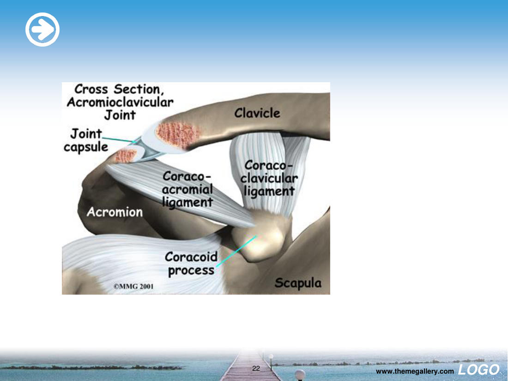
E. 肩峰下關節（suprahumeral / subacromial joint）
- 喙肩弓coracoacromial arch = 肩胛頸＋肩峰＋堅硬的喙肩韌帶＋喙突，又稱棘上肌出口supraspinatus outlet。
- 弓下的軟組織：旋轉肌袖肌腱、肱二頭肌長頭肌腱、關節囊、囊韌帶、三角肌下滑囊與肩峰下滑囊（subdeltoid & subacromial bursa）。
- 三角肌上舉時拉力線為直接向上，使肱骨垂直上移而撞擊喙肩弓或肩峰 → 肩夾擠症候群（impingement）的解剖基礎。
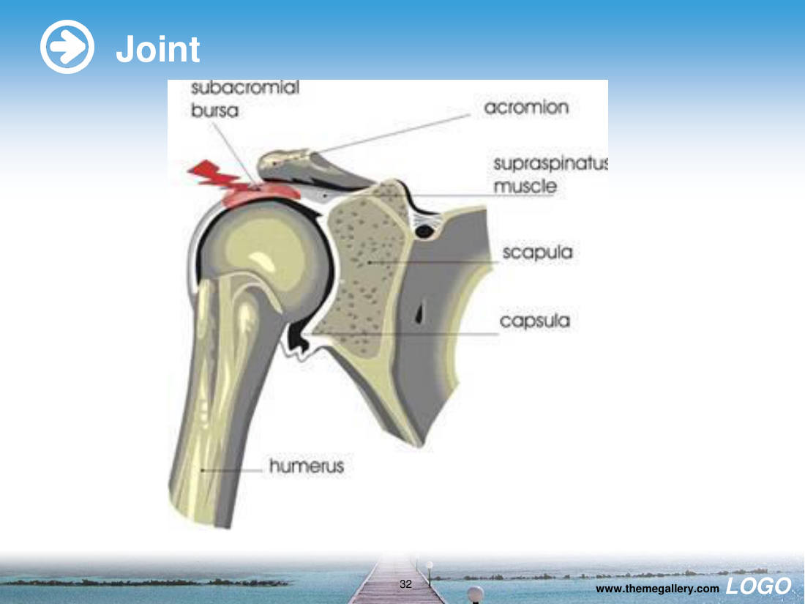
F. 肩胛肱骨節律 肩胛肱骨節律scapulohumeral rhythm
- 額狀面（frontal plane）外展：前 30° 後，肩胛骨：肱骨 = 1：2（即 ST：GH = 1：2，GH 動 2、ST 動 1）。
- 每外展 15° → 盂肱 10°、肩胛胸廓 5°。
- 外展 180° ＝ 肱骨（盂肱）120° ＋ 肩胛骨向上旋轉 60°；60° 中 30° 來自 AC、30° 來自 SC（鎖骨上舉 30°）。
- 肩胛骨平面（scapular plane）：GH ： ST = 1.25 ： 1。
- 動作中肩胛骨、鎖骨、肱骨三者缺一不可。
- 正常節律的功能：維護盂肱穩定、增加三角肌收縮效率、增加手舉高角度（但 scapula 動作量小於 GH）。
必背重點
節律 ST：GH = 1：2；180° = 120°(GH) + 60°(ST)；ST 的 60° = AC 30° + SC 30°。
易混淆
講義有「GH ： ST」與「ST ： GH」兩種寫法：額狀面 GH：ST = 2：1（=ST：GH 1：2）；肩胛骨平面 GH：ST = 1.25：1。考題問「scapulothoracic 與 glenohumeral 之比」時答 1：2。
記憶口訣
「肩 1 肱 2，12 + 6 = 18（120+60=180）」；前 30° 先只動肱骨（setting phase）。
對照解剖生理：上肢肌肉
肩部肌肉：起止點、神經支配、動作
1. 軀幹 → 肩帶（動肩胛骨）
| 肌肉 | 近端（起點） | 遠端（止點） | 神經 | 動作 |
|---|---|---|---|---|
| 前鋸肌 serratus anterior | 胸廓前外側（上位肋骨） | 肩胛骨內側緣 | 長胸神經 long thoracic n. | 肩胛骨外展（前突）＋向上旋轉 |
| 斜方肌 trapezius | 枕骨、項韌帶、C7–T12 棘突 | 鎖骨肩峰端、肩峰、肩胛棘 | 副神經 spinal accessory n. | 上：上提、向上旋轉；中：向上旋轉＋內收；下：向上旋轉＋內收＋下壓 |
| 菱形肌（大、小） rhomboid major & minor | 項韌帶、最下兩個頸椎與上四個胸椎棘突 | 肩胛骨內側緣 | 肩背神經 dorsal scapular n. | 向下旋轉、內收、上提 |
| 胸小肌 pectoralis minor | 第 2–5 肋 | 肩胛骨喙突 | 胸內側神經 medial pectoral n. | 下壓 |
| 提肩胛肌 levator scapulae | 上位頸椎橫突 | 肩胛骨內側緣 | 肩背神經 dorsal scapular n. | 上提、向下旋轉 |
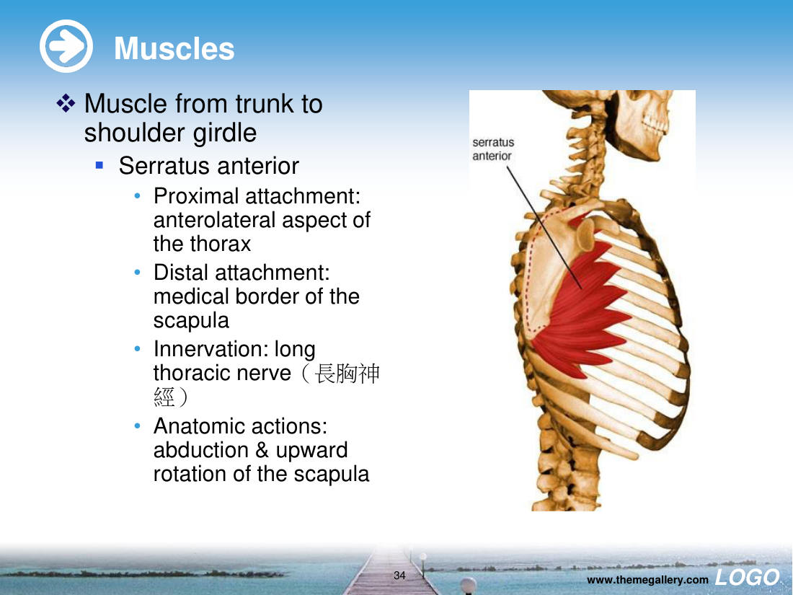
2. 肩帶 → 肱骨
| 肌肉 | 近端 | 遠端 | 神經 | 動作 |
|---|---|---|---|---|
| 三角肌 deltoid | 鎖骨肩峰端、肩峰、肩胛棘 | 三角肌粗隆 deltoid tuberosity | 腋神經 axillary n. | 外展 abd |
| 棘上肌 supraspinatus | 棘上窩 | 大結節 | 肩胛上神經 suprascapular n. | 外展 abd |
| 棘下肌＋小圓肌 infraspinatus & teres minor | 棘下窩、肩胛骨外側緣 | 大結節 | 棘下肌：肩胛上神經；小圓肌：腋神經 | 外轉 ER、內收 add |
| 肩胛下肌 subscapularis | 肩胛骨肋面（肩胛下窩） | 小結節 | 肩胛下神經 subscapular n. | 內轉 IR |
| 大圓肌 teres major | 肩胛骨下角 | 小結節嵴 | 肩胛下神經 subscapular n. | 內轉、內收、伸直 |
| 喙肱肌 coracobrachialis | 肩胛骨喙突 | 肱骨內側面 | 肌皮神經 musculocutaneous n. | 屈曲、內收 |
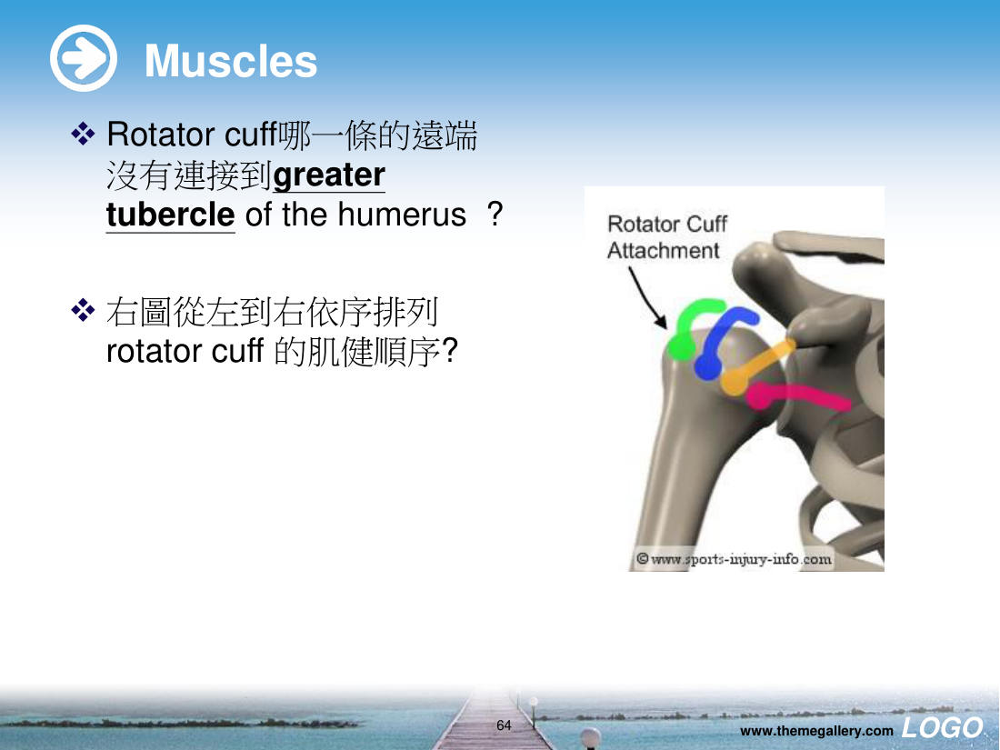
必背重點
- 旋轉肌袖中唯一止於小結節（遠端沒有連到 greater tubercle）的是肩胛下肌。
- 旋轉肌袖的神經：棘上、棘下 → 肩胛上神經；小圓 → 腋神經；肩胛下 → 肩胛下神經。
- 肱二頭肌、肱三頭肌不屬於肩胛肱骨肌群（遠端不附著在肱骨）。
3. 軀幹 → 肱骨
| 肌肉 | 近端 | 遠端 | 神經 | 動作 |
|---|---|---|---|---|
| 闊背肌 latissimus dorsi | T6 以下胸椎棘突、胸腰筋膜、髂嵴、最下幾根肋骨 | 經腋窩止於肱骨小結節嵴 | 胸背神經 thoracodorsal n.（C6–C8） | IR、伸直、內收（盂肱）；肩胛骨下壓；抬高骨盆 |
| 胸大肌 pectoralis major | 鎖骨、胸骨、第 2–7 肋軟骨 | 大結節嵴 | 胸內側＋胸外側神經 | 內收、內轉 |
4. 各動作的主要肌肉（ROM）
| 動作 | ROM | 肌肉 |
|---|---|---|
| 伸直 Extension | 0–60° | 闊背肌、大圓肌、三角肌 |
| 屈曲 Flexion | 0–180° | 三角肌、喙肱肌 |
| 外轉 External rot | 0–90° | 棘下肌、小圓肌 |
| 內轉 Internal rot | 0–80° | 胸大肌、闊背肌、大圓肌 |
| 外展 Abduction | 0–180° | 三角肌、棘上肌 |
| 水平外展 | — | 講義列「triceps」（疑為筆誤，後三角肌較合理） |
| 內收 Adduction | 0–75° | 闊背肌、胸大肌 |
5. 肩胛骨動作與肌肉
| 肩胛骨動作 | 主要肌肉 |
|---|---|
| 外展＋向上旋轉 | 前鋸肌 |
| 上提 Elevation | 上斜方肌、提肩胛肌 |
| 內收 Adduction | 中斜方肌、大／小菱形肌 |
| 下壓＋內收 | 下斜方肌 |
| 內收＋向下旋轉 | 大／小菱形肌 |
易混淆
- 斜方肌可同時上提（上）、內收（中）、下壓（下）；但「外展」是前鋸肌。
- 闊背肌／大圓肌／胸大肌 → 內轉；棘下肌／小圓肌 → 外轉（棘下肌不是內轉肌）。
- 前鋸肌（長胸神經）≠ 菱形肌（肩背神經）≠ 斜方肌（副神經）。
記憶口訣
「前鋸長胸、斜方副、菱提肩背」；旋轉肌 SITS：上外下內（棘上＝外展；棘下、小圓＝外轉；肩胛下＝內轉）。
對照解剖生理：上肢肌肉
肩部支持與動態穩定、協同肌、臨床應用
1. 肩部穩定機制
- 放鬆站姿／坐姿時，肩帶肌肉沒有收縮。此時防止肱骨半脫位（subluxation）的結構：水平喙肱韌帶、上盂肱韌帶、關節囊內負壓（negative atmospheric pressure）。
- 旋轉肌袖：站立提重物時，旋轉肌把肱骨頭緊壓在關節盂上，防止脫位。
- 肱二頭肌：肘屈曲持重時，長頭肌腱張力對肱骨頭產生向下、向內的力，使其壓向關節盂。
- 三角肌：上舉初期主力為垂直向上；隨上舉進行，三角肌與旋轉肌的水平向內分力穩定盂肱關節；完全上舉時，外展＋向上旋轉的肩胛骨形成肱骨頭的「平台」，由前鋸肌與斜方肌穩定。
- 外展時使肱骨頭下沉（depression）最主要的肌肉：棘上肌（講義考題解答）。
2. 肌肉角色
- 主作用肌agonist：主要造成關節活動或維持姿勢。
- 拮抗肌antagonist：造成與主作用肌相反的動作，通常不主動收縮，而是被動伸長或縮短。
- 協同肌synergist：與主作用肌同時收縮，常以等長收縮穩定近端關節，使遠端關節活動。例：旋前圓肌（pronator teres）在阻抗式肘屈曲時抑制肱二頭肌不必要的旋後。
| 肌肉組合 | 協同（synergist） | 拮抗（antagonist） |
|---|---|---|
| 斜方肌 ＋ 前鋸肌 | 肩胛骨向上旋轉 | 肩胛骨後縮／前突 |
| 上斜方 ＋ 下斜方 | 肩胛骨向上旋轉 | 肩胛骨上提／下壓 |
3. 手放頭後（hand behind head）
- 肘屈曲：肱二頭肌、肱三頭肌
- SC 關節抬高與向上旋轉
- 肩胛骨上提、向上旋轉、外展：斜方肌＋前鋸肌
- GH 外展＋完全外轉：三角肌、棘上肌；棘下肌、小圓肌
4. 臨床應用
| 狀況 | 表現 |
|---|---|
| 單一盂肱肌肉麻痺 | 力量缺損，但常可藉代償 substitution把手放到想要的位置 |
| 單一肩胛骨肌肉麻痺 | 嚴重影響手臂與手的使用 |
| 前鋸肌麻痺（長胸神經） | 肩胛骨無法貼緊胸廓，內側緣掀起＝翼狀肩胛 winging scapula；肩胛肱骨節律異常，手臂無法完全上舉 |
| 斜方肌麻痺（副神經） | 肩胛骨休息位呈向下旋轉、外展、下壓；盂肱處於外展位，肱骨頭易半脫位、SC 關節疼痛；外展時肩胛骨無法向上旋轉反而向下旋轉；無法後縮肩胛骨 |
| 斜方肌＋前鋸肌同時麻痺 | 肩胛骨穩定完全喪失，手臂無法抬高 |
必背重點
- 翼狀肩胛 → 前鋸肌（長胸神經）無力；前鋸肌麻痺 → 無法完全上舉。
- 使用腋下拐杖訓練：闊背肌＋肱三頭肌（肩壓低、肘伸直）；講義解答為 C。
- 維持肱骨頭不半脫位最不關鍵的肌肉：大圓肌（非旋轉肌袖）。
5. 講義考題與解答彙整
| 題目 | 答案 |
|---|---|
| 斜方韌帶與圓錐韌帶合稱 | 喙骨鎖骨韌帶 (C) |
| 肩外展 180° 鎖骨軸向旋轉因哪條韌帶拉緊 | 喙鎖韌帶 (A) |
| ST 與 GH 動作比值 | 1：2 |
| 正常節律敘述錯誤者 | 「scapula 動作比 GH 大」錯誤 |
| 非盂肱內轉肌群 | 棘下肌 (C) |
| 同時上提、內收、下降肩胛骨 | 斜方肌 (A) |
| 翼狀肩胛 | 前鋸肌 (C) |
| 麻痺致手臂無法完全上舉 | 前鋸肌 (A) |
| 腋下拐杖訓練 | 闊背肌＋肱三頭肌 (C) |
| 防半脫位最不關鍵 | 大圓肌 (B) |
| 外展時使肱骨頭下沉 | 棘上肌 (A) |
易混淆
講義 p.69 最後一題題幹為「肩胛骨外展、內收、下降」，p.65/68 為「上提、內收、下降」，答案皆為斜方肌（上提＝上部、內收＝中部、下降＝下部）。
肘關節骨骼標誌與關節
1. 可觸摸的骨性標誌 Palpable structures
- 外上髁Lateral epicondyle（肱骨遠端外側）= extensor epicondyle，伸肌附著，與網球肘有關。
- 內上髁Medial epicondyle（肱骨遠端內側）= flexor epicondyle，腕與指屈肌附著，與高爾夫球肘有關。
- 鷹嘴突Olecranon process：尺骨上端大突起；肘尖著桌、前臂垂直時撞到桌面的就是它。
- 橈骨頭Head of radius：在外上髁遠端一點可摸到。
- 尺神經 (ulnar nerve) 通過鷹嘴突與內上髁之間（medial epicondylar groove），肘屈 90° 時最易受壓（俗稱「麻筋」）。
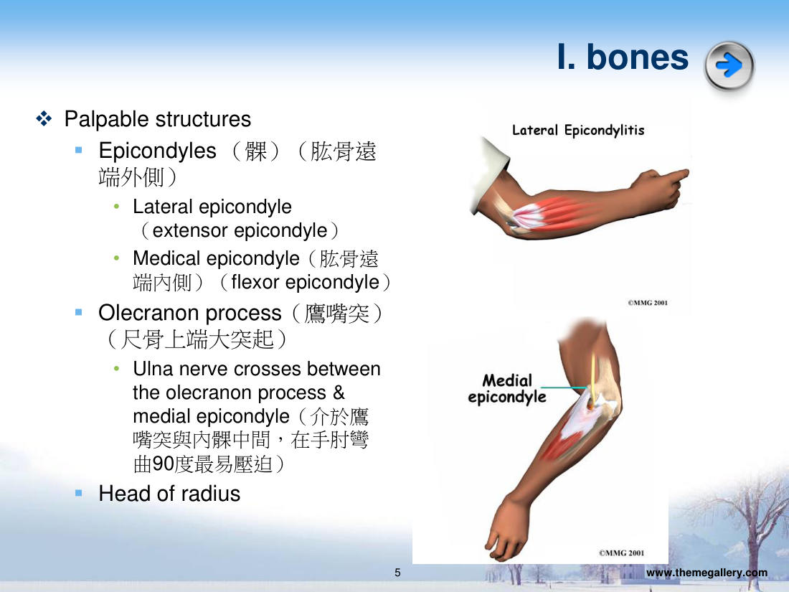
必背重點
三角徵象Triangle sign：鷹嘴突、內上髁、外上髁三點。屈曲 90° 呈等腰三角形；完全伸直時三點成一直線。（用於判斷脫位或骨折）
觸診法：拇指放外上髁、食指放鷹嘴突、中指放內上髁。
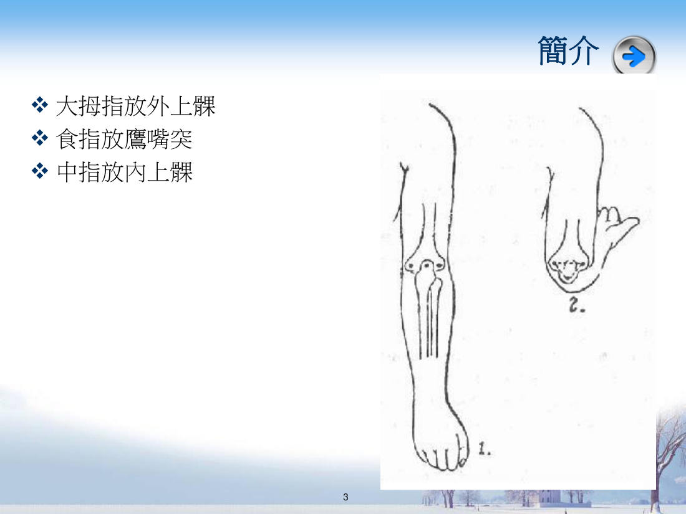
記憶口訣
「外伸內屈」：外上髁＝伸肌＝網球肘；內上髁＝屈肌＝高爾夫球肘。
2. 肘關節的組成 Joints of the elbow
肘部共三個關節，共用同一個關節囊（三個關節之間相通）。
A. 肱尺關節Elbow (ulnohumeral) joint
- 單軸樞紐關節uniaxial hinge joint：只做 flexion & extension。（講義寫「兩度自由度」，與單軸矛盾；以單軸 1 DOF 為準。）
- 穩定性來源：骨性構形 (bony configuration) 與 兩側副韌帶 (collateral ligaments)。
- 運動軸：通過滑車 (trochlea) 與肱骨小頭 (capitulum) 中心的連線。
- 講義 p.7 圖註：可做屈伸，旋內旋外，「小頭半脫位」（指橈骨頭半脫位，幼兒肘常見）。
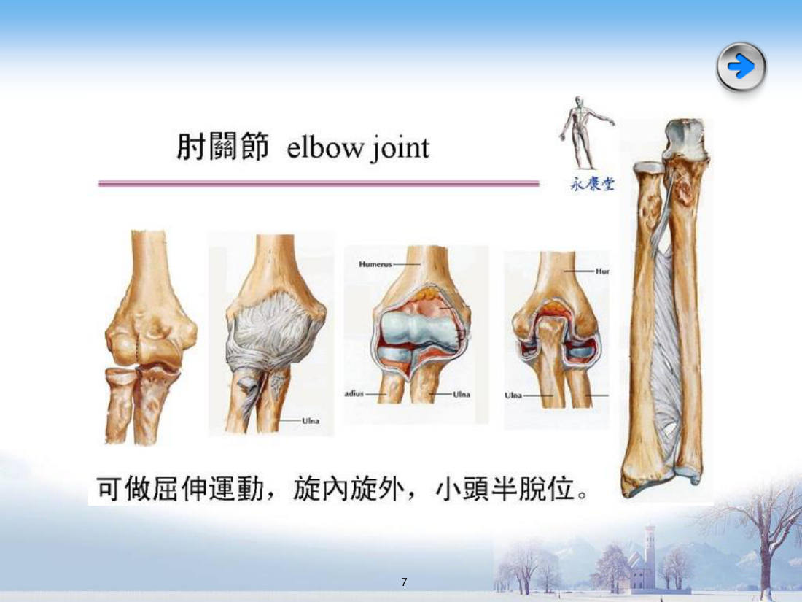
提攜角 Carry anglecubital angle
- 手臂伸直、掌心朝前時，上臂與前臂的長軸不在一直線，前臂略向外偏。
- 成因：遠端內側滑車比外側肱橈之間更往遠端延伸。
- 正常：男 5–10°、女 10–15°（女性較大）。
- 臨床：carry angle 過大 → 內側副韌帶 (MCL) 過度被拉扯，易斷裂／扯傷（講義說法：內側副韌帶太鬆，一外傷就扯傷）。
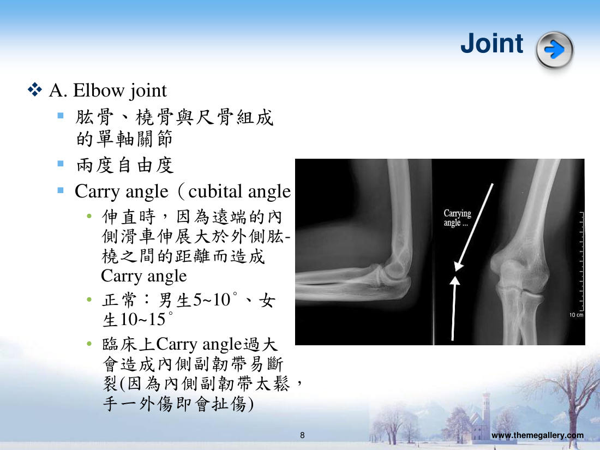
B. 橈尺關節Radioulnar articulation
- 單軸樞軸關節uniaxial pivot joint：容許旋轉；同類如寰樞關節 (C1–C2) 讓頭旋轉。
- 運動時是橈骨繞尺骨旋轉（尺骨固定）。
- 旋後 supination：橈尺骨互相平行；旋前 pronation：橈骨橫越過尺骨。
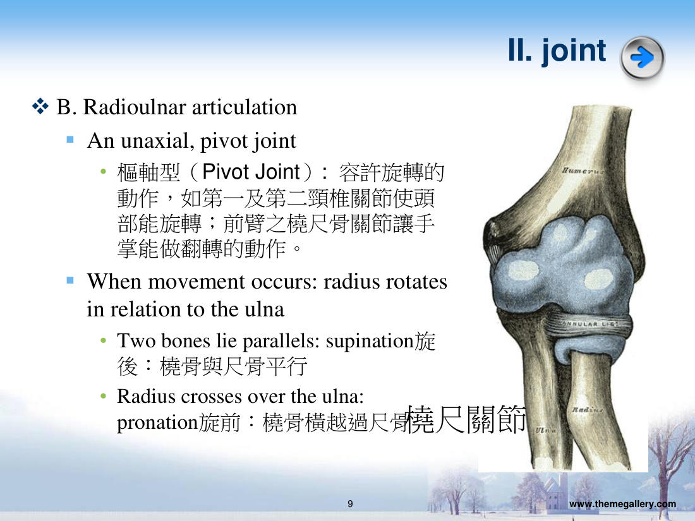
- 近端橈尺關節Proximal radioulnar joint：位於肘關節囊內；橈骨頭與尺骨的橈骨切跡 (radial notch) 相接，同時橈骨頭在肱骨小頭 (capitulum) 圓面上旋轉。環狀韌帶Annular ligament包住橈骨頭，防止橈骨頭做其他方向的移動。
- 遠端橈尺關節Distal radioulnar joint：橈骨繞著尺骨頭轉動（尺骨切跡 vs 尺骨頭）。
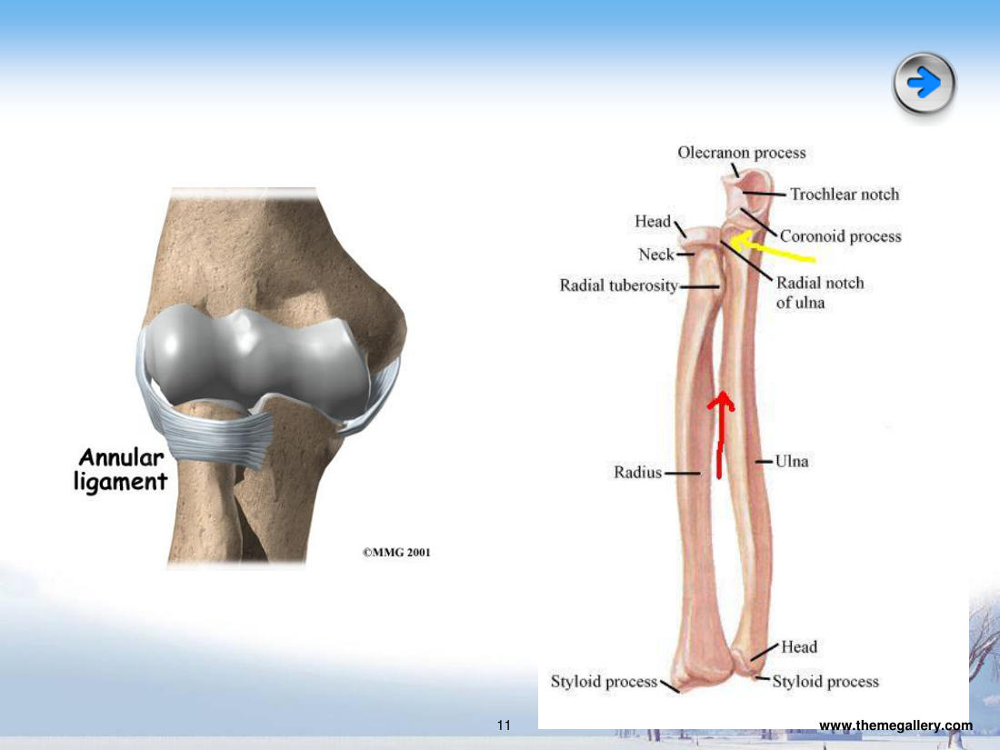
易混淆
肱尺關節 (ulnohumeral) = 屈伸（hinge）；橈尺關節 (radioulnar) = 旋前旋後（pivot）。屈伸看肱尺，轉前臂看橈尺。
3. 關節囊 Joint capsule
- 從後方看有兩個滑液囊 (bursa)：radial-humeral bursa 與 olecranon bursa。
- 前、後側關節囊較鬆 → 容許屈伸；內、外側關節囊較緊 → 加強副韌帶支持。
- 關節囊神經支配豐富，內有許多本體感覺接受器 (proprioceptors)；肘也被視為肩與手之間的「神經連結」。
- 相關韌帶：尺側副韌帶、橈側副韌帶、環狀韌帶。
4. 三個關節的位置 Joint positions
| 關節 | 休息位置 Resting | 最緊位置 Close-packed | 關節囊受限模式 Capsular pattern |
|---|---|---|---|
| 肱尺 Ulnohumeral | 肘屈 70°、旋後 10° | 伸直 + 旋後 | 屈 / 伸 |
| 肱橈 Radiohumeral | 完全伸直 + 旋後 | 肘屈 90°、旋後 5° | 屈 / 伸 |
| 近端橈尺 Proximal radioulnar | 旋後 35°、肘屈 70° | 旋後 5° | 旋後與旋前受到同等限制 |
5. 關節活動度與終端感 ROM & End-feel
| 動作 | ROM | End-feel |
|---|---|---|
| Flexion 屈曲 | 120°–160° | 前側 Soft：上臂與前臂肌肉相互接觸；後側 Hard：尺骨冠狀突 (coronoid process) 頂到肱骨冠狀窩 (coronoid fossa) |
| Extension 伸直 | 0°–5° | Hard：尺骨鷹嘴突 (olecranon process) 頂到肱骨鷹嘴窩 (olecranon fossa) |
必背重點
- 肱尺 = 單軸 hinge；橈尺 = 單軸 pivot。
- Carry angle：男 5–10°、女 10–15°。
- 屈曲 end-feel：前 soft、後 hard；伸直 end-feel：hard（鷹嘴突入鷹嘴窩）。
- 關節囊前後鬆、兩側緊。
對照解剖生理：肩、肘、髖、膝關節
肘關節韌帶與神經
1. 韌帶 Ligaments
內側副韌帶Medial (ulnar) collateral ligament, MCL（三束）
- 前束Anterior bundle：影響肘屈曲 20°–120°；在 20–120° 最緊，完全屈曲與完全伸直時鬆弛。是對抗外翻不穩定valgus instability最重要的約束構造。
- 後束Posterior與斜／橫束Oblique (transverse)：支持並協助 MCL 的穩定。（講義 p.35 稱 MCL 含前、後、橫三部份）
外側副韌帶Lateral collateral ligament, LCL（講義說四條，實際列出三條）
- 橈側副韌帶Radial collateral ligament：自外上髁連到環狀韌帶。
- 外側尺副韌帶Lateral ulnar collateral ligament：主要的外側穩定者，繞過環狀韌帶止於旋後肌結節 (supinator tubercle)。
- 副外側副韌帶Accessory lateral collateral ligament：自 supinator tubercle 到環狀韌帶；功用是維持橈骨頭在尺骨 radial notch 上。
橈尺韌帶 Radioulnar ligaments
- 環狀韌帶Annular ligament、副側韌帶 (accessory collateral)、方形韌帶Quadrate ligament、斜索Oblique cord。
- 骨間膜Interosseous membrane：穩定橈、尺骨之間，避免近端橈骨向近端跑到尺骨上（力量由橈骨傳到尺骨）。
- 防止上橈尺關節脫離：主要是 annular ligament 與 quadrate ligament（講義考題答案 C）。
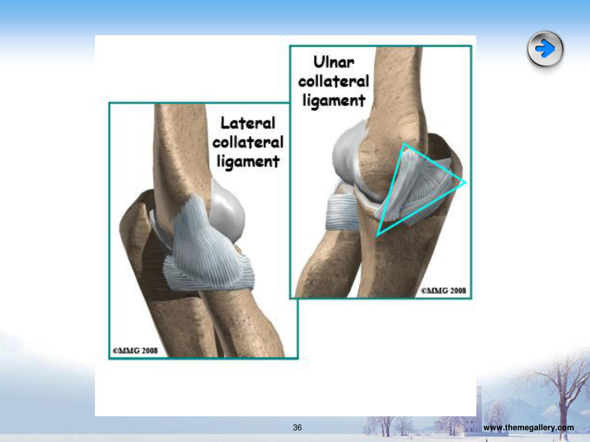
必背重點
- MCL 前束 = 對抗肘外翻 (valgus) 最重要；棒球投手最常拉傷的是尺側副韌帶 (ulnar collateral ligament)。
- 前 MCL 在 20–120° 最緊，全屈曲、全伸直時鬆。
- 外側主要穩定者 = lateral ulnar collateral ligament。
易混淆
內側 = 尺側 (ulnar) 副韌帶 = MCL；外側 = 橈側 (radial) 副韌帶 = LCL。投手的投球動作產生外翻力 → 傷內側（尺側）。
2. 神經與肘 Nerves around the elbow
| 神經 | 路徑 |
|---|---|
| 尺神經Ulnar nerve | 通過內上髁溝 (medial epicondylar groove)，位於鷹嘴突與內上髁之間 |
| 正中神經Median nerve | 通過 supracondylar process 與內上髁之間 |
| 橈神經Radial nerve | 通過肱三頭肌外側頭下方 |
3. 神經損傷的臨床應用 Clinical application
| 癱瘓肌肉 | 原因 | 無法做到 |
|---|---|---|
| 肱三頭肌 Triceps brachii | 橈神經損傷（講義另寫 C6 損傷；肱三頭肌神經根為 C7–C8） | 無法伸肘；躺著無法維持兩手高舉 |
| 肱二頭肌 + 肱肌 Biceps & brachialis | 肌皮神經損傷、某些肌肉萎縮症 | 無法抬手，只能用甩的 |
| 旋前圓肌 + 旋前方肌 Pronator teres & quadratus | 肘上方的正中神經損傷 | 無法握住杯子、無法開鎖 |
記憶口訣
「肌皮管屈（二頭、肱肌），橈神經管伸（三頭、肘後、旋後肌），正中管旋前。」
對照解剖生理：上肢肌肉
肘部肌肉與協同收縮
1. 肌肉總覽（手肘動態穩定肌群）
- 屈肌 Flexors：肱二頭肌、肱肌、肱橈肌。
- 伸肌 Extensors：肱三頭肌、肘後肌。
- 旋前肌 Pronators：旋前圓肌、旋前方肌、肱橈肌。
- 旋後肌 Supinators：旋後肌 (supinator)、肱橈肌；二頭肌也旋後。
2. 肘屈肌 Elbow flexors
| 肌肉 | 近端附著 | 遠端附著 | 神經 | 動作 |
|---|---|---|---|---|
| 肱二頭肌Biceps brachii | 長頭：肩胛骨盂上結節；短頭：肩胛骨喙突 | 橈骨粗隆 (tuberosity of radius) | 肌皮神經 (C5–C6) | 肩屈、肘屈、前臂旋後 |
| 肱肌Brachialis | 肱骨幹遠端（講義寫 1/2 處） | 尺骨冠狀突 | 肌皮神經 (C5–C6) | 肘屈 |
| 肱橈肌Brachioradialis | 肱骨外側髁上嵴 (lateral supracondylar ridge) | 橈骨莖突 (styloid process) | 橈神經 (C5–C6) | 肘屈（前臂中立位）；使前臂回到中立 |
講義訂正：p.16 寫「肱骨內上髁」與「正中神經 (C6–C7)」皆為筆誤，肱橈肌起於外側髁上嵴，受橈神經支配。講義另列「pronation & elbow flexion」，實際是前臂中立位時最有效的屈肘肌。
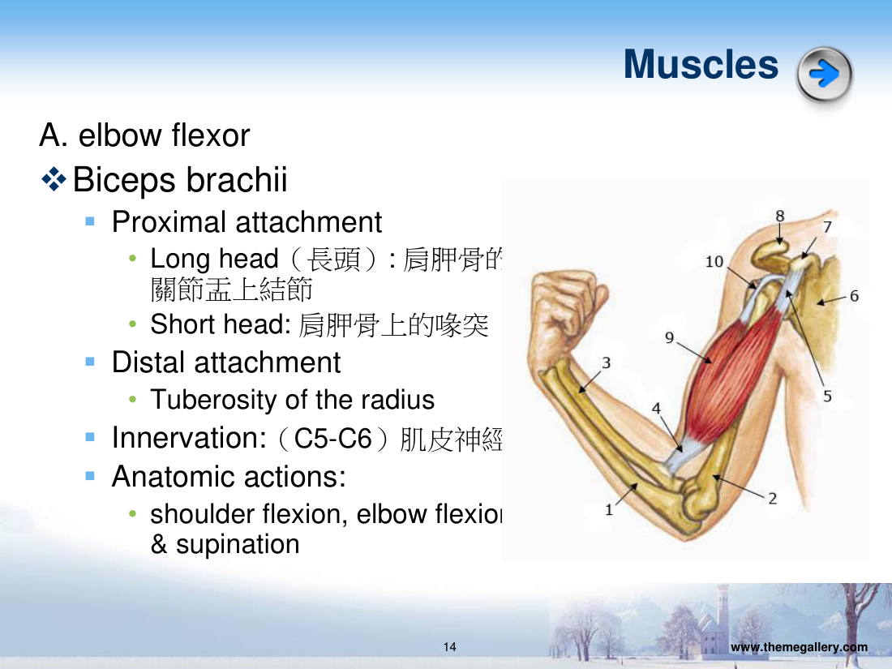
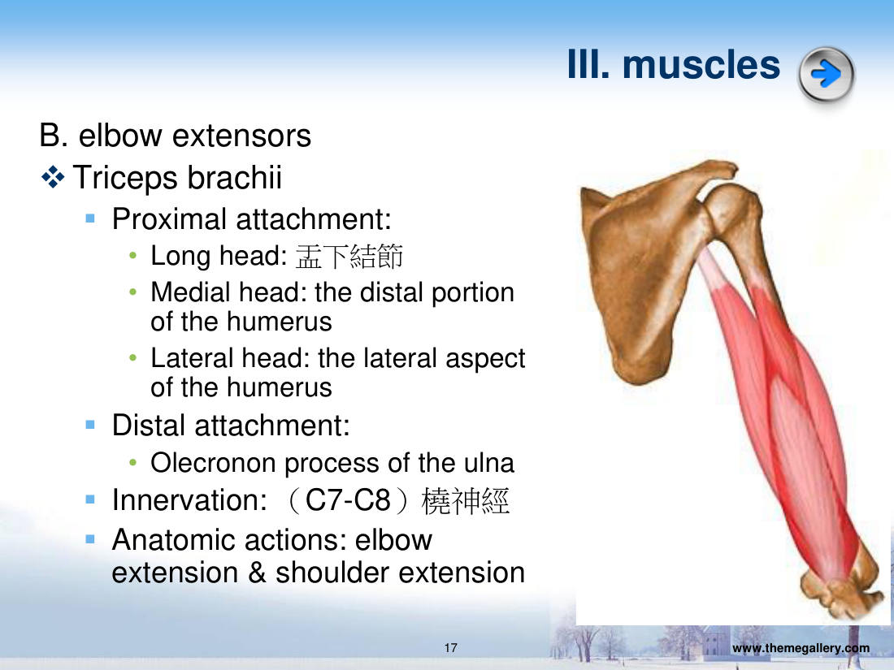
3. 肘伸肌 Elbow extensors
| 肌肉 | 近端附著 | 遠端附著 | 神經 | 動作 |
|---|---|---|---|---|
| 肱三頭肌Triceps brachii | 長頭：盂下結節；內側頭：肱骨遠端後面；外側頭：肱骨外側面 | 尺骨鷹嘴突 | 橈神經 (C7–C8) | 肘伸、肩伸（長頭） |
| 肘後肌Anconeus | 肱骨外上髁 | 尺骨 | 橈神經 (C7–C8) | 肘伸、穩定肘與近端橈尺關節 |
4. 旋後與旋前肌
| 肌肉 | 附著 | 神經 | 動作 |
|---|---|---|---|
| 旋後肌Supinator | 近端：外上髁與鄰近尺骨；遠端：橈骨近端的腹側與外側面 | 橈神經 (C5–C7) | 旋後 |
| 旋前方肌Pronator quadratus | 尺骨與橈骨遠端 1/4 的掌（volar）側 | 正中神經分支（骨間前神經）(C8–T1) | 旋前 |
| 旋前圓肌Pronator teres | （講義未列）內上髁→橈骨外側中段 | 正中神經 | 旋前（較強的旋前肌） |
5. 協同收縮 Synergistic contraction
- 神經系統選擇以最少能量達成目的的肌肉；參與的肌肉數視工作需求而定。
- 許多肌肉跨越一個以上關節；用雙關節肌肉只產生單關節動作是經濟的，此時協同肌必須穩定不動作的關節，或使它往相反方向動。
肘屈曲時各肌的角色
- 肱肌：不論有無負重，永遠是肘屈肌（最穩定的屈肘肌，與前臂位置無關）。
- 肱橈肌：前臂在中立位時是純屈肌。
- 肱二頭肌：肩屈 + 肘屈 + 前臂旋後。
比較
- 二頭肌 vs 旋後肌：肘屈 90° 時，二頭肌旋後效率約為旋後肌的近 4 倍（Fick, 1911）；肘伸直 + 旋後時，只有約 2 倍。
- 旋前圓肌 vs 旋前方肌：旋前圓肌是較強的旋前肌；旋前方肌在慢速、無阻力旋前時才主動收縮；旋前方肌作用力較不受肘關節與前臂位置影響。
- 三頭肌 vs 肘後肌：三頭肌遠比肘後肌強；兩者共同保護肘與近端橈尺關節。
雙關節（多關節）肌
- 肱二頭肌：三關節肌（肩、肱橈／肱尺、橈尺）；其長頭為雙關節肌。
- 肱三頭肌長頭：雙關節肌（肩、肘）。
- 旋前圓肌：雙關節肌（肱尺、肱橈）。
必背重點
- 屈肘三肌：二頭肌、肱肌、肱橈肌；伸肘：三頭肌 + 肘後肌。
- 二頭肌 = 肩屈 + 肘屈 + 旋後（肌皮神經 C5–C6）。
- 肱三頭肌長頭同時跨肩，肩屈 + 肘屈時被拉到最長。
- 肱肌：永遠有利的屈肘肌；旋前方肌：作用力不受位置影響、最難徒手觸摸。
6. 肌肉角色與主動不足
- 主作用肌Agonist：主要造成關節活動或維持姿勢。
- 拮抗肌Antagonist：造成與主作用肌相反的動作，通常被動伸長或縮短。
- 協同肌Synergist：與主作用肌同時收縮，常以等長收縮穩定近端關節而讓遠端活動。例：阻抗式肘屈時，旋前圓肌抵消二頭肌「不必要的旋後」。
- 角色並非固定，會隨動作與外力改變。
- 主動不足Active insufficiency：肌肉在最短長度時收縮，位於長度–張力曲線最低點，收縮力弱；身體會避免此情況（例：拉、推動作）。
7. 網球肘與高爾夫球肘
| 俗稱 | 部位 | 附著的肌群 |
|---|---|---|
| 網球肘 Tennis elbow | 外上髁 (lateral epicondyle) | 腕與指的伸肌 (extensors) |
| 高爾夫球肘 Golfer's elbow | 內上髁 (medial epicondyle) | 腕與指的屈肌 (flexors) |
全身滑膜關節地圖
左邊是肌動學「滑液關節的種類」表，右邊是解剖學圖6-5，像把兩份講義並排看。點表格一列，右圖就框出同類關節；切到「互動地圖」可點關節看構成骨與動作，也能測驗。
易混淆
同一種關節，兩科叫法不同：球窩關節＝杵臼關節、車軸關節＝樞軸關節、橢圓關節＝髁狀關節。
胸鎖關節：解剖學圖6-5 列為滑動關節，肌動學表列為鞍狀關節。考哪一科就依那一科講義作答，不確定請問老師。
肌動學期中考練習測驗（10/30）第 1–9 題
先自己選，再點「看答案與詳解」。每題詳解附上講義對應的圖；藍框是跟講義對照後的補充。整份也可以在「測驗」頁用選擇題模式練。
第 1 題 下列何種問題最可能產生「反向肩胛肱骨節律」（reverse scapulohumeral rhythm）現象？
- 黏連性肩關節囊炎（adhesive capsulitis）
- 斜頸（wry neck）
- 肱三頭肌斷裂（triceps rupture）
- 肱二頭肌斷裂（biceps rupture）
看答案與詳解
答案：(A) 黏連性肩關節囊炎（adhesive capsulitis）
黏連性肩關節囊炎（俗稱五十肩）會導致盂肱關節（glenohumeral joint）產生嚴重的關節囊黏連與活動受限。當患者嘗試舉高手臂時，盂肱關節無法正常旋轉，會改由肩胛骨相對於胸壁過度且過早地旋轉來代償，出現肩胛胸壁關節（scapulothoracic joint）活動量顯著大於盂肱關節的現象，此即稱為「反向肩胛肱骨節律」。
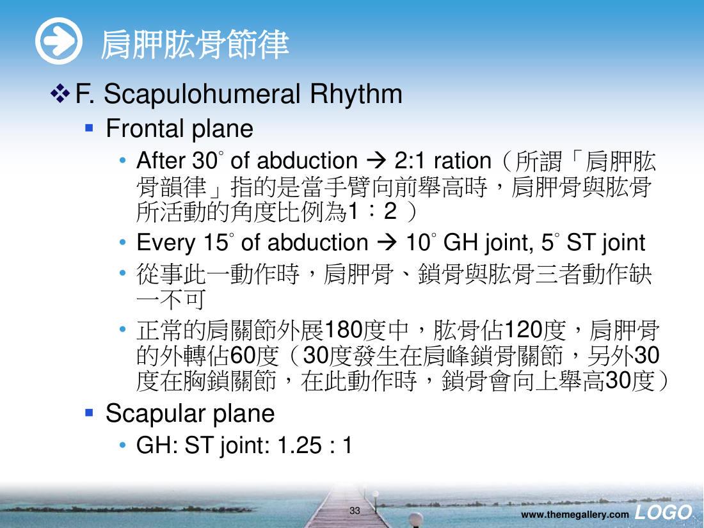
第 2 題 有關開放鏈與閉鎖鏈動作的敘述，下列何者錯誤？
- 開放鏈與閉鎖鏈動作屬於關節運動學（arthrokinematics）
- 下肢蹲下動作為閉鎖鏈動作
- 開放鏈動作特徵為固定近端－移動遠端（distal-on-proximal）的動作
- 上肢投球動作為開放鏈動作
看答案與詳解
答案：(A) 開放鏈與閉鎖鏈動作屬於關節運動學（arthrokinematics）
開放鏈（Open Kinetic Chain）與閉鎖鏈（Closed Kinetic Chain）屬於骨骼運動學（osteokinematics）的分類方式，用以描述整體肢體段在空間中的移動特性。
關節運動學（arthrokinematics）探討的是關節內部的微觀動作，如滾動（rolling）、滑動（sliding）與旋轉（spinning），故 (A) 敘述錯誤。
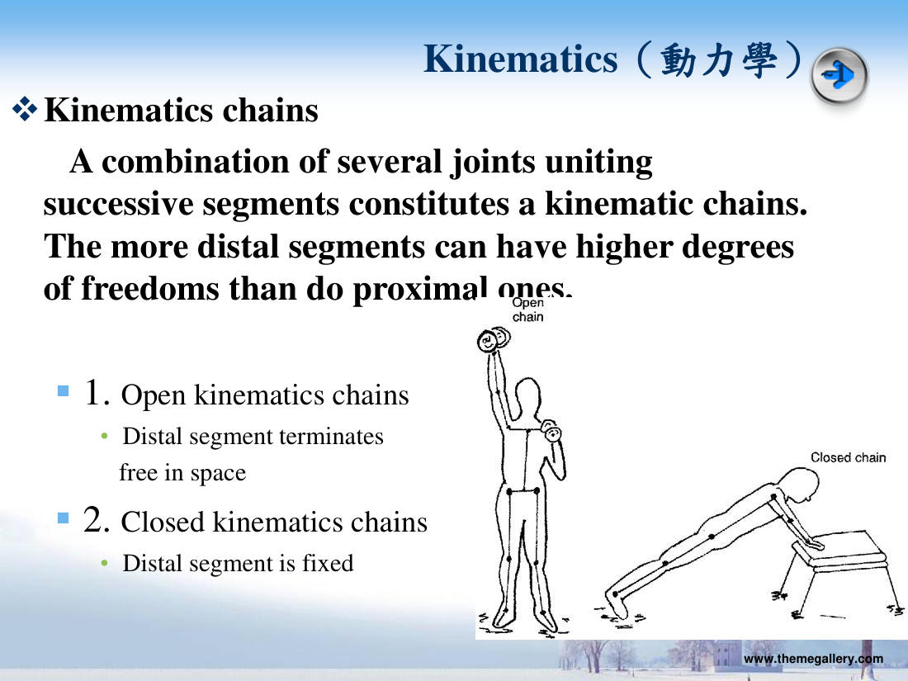
第 3 題 欲牽張緊縮的肱三頭肌，應：
- 先伸直肩關節，再屈曲肘關節
- 先屈曲肩關節，再伸直肘關節
- 先屈曲肘關節，再屈曲肩關節
- 先伸直肘關節，再過度伸直肩關節
看答案與詳解
答案：(C) 先屈曲肘關節，再屈曲肩關節
肱三頭肌（長頭）為雙關節肌肉，主要功能為伸直肘關節與伸直肩關節。
欲進行牽張（stretching）時，必須擺在與其主要肌肉作用完全相反的姿勢，即屈曲肘關節搭配屈曲肩關節（手高舉過頭且手肘彎曲）。
記法：牽張＝擺到「與肌肉動作完全相反」。肱三頭肌長頭會伸肩＋伸肘 → 牽張就屈肩＋屈肘。
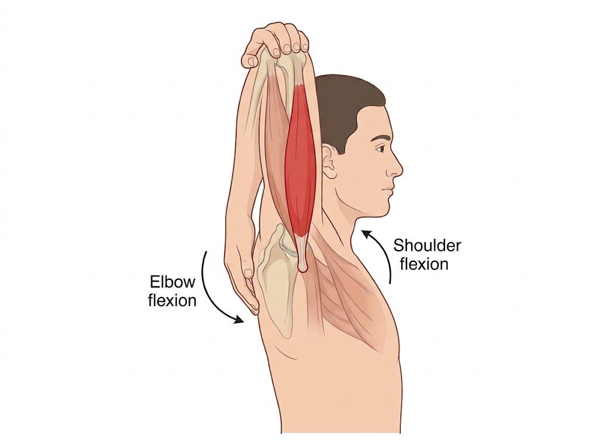
第 4 題 在肌動學領域中，下列何者不是研究肌肉作用的方法？
- 血液檢驗
- 觸診
- 解剖
- 肌電圖
看答案與詳解
答案：(A) 血液檢驗
肌動學分析肌肉功能的主要方法包含：觸診（Palpation，觀察與觸摸肌腹收縮）、解剖學（Anatomy/Dissection，分析肌肉起止點與拉力線）、肌電圖（EMG，紀錄肌肉電氣活化訊號）及肌力測試等。血液檢驗屬於醫學臨床生化檢測，無法用於評估肌肉的生物力學或運動學功能。
第 5 題 喙突是哪一個肌肉附著的地方？
- 肱二頭肌長頭
- 肱三頭肌長頭
- 肱肌
- 喙肱肌
看答案與詳解
答案：(D) 喙肱肌
附著於肩胛骨喙突（coracoid process）的肌肉共有三塊：胸小肌（pectoralis minor）、喙肱肌（coracobrachialis）以及肱二頭肌短頭（short head of biceps brachii）。（肱二頭肌長頭起於關節上結節；肱三頭肌長頭起於關節下結節）。
喙突三條肌肉口訣：胸小、喙肱、二頭短。
第 6 題 肌節（sarcomere）是骨骼肌收縮的基本單位，在肌原纖維（myofibril）中，何種構造之間形成一個肌節？
- M線
- H區
- Z線
- A帶
看答案與詳解
答案：(C) Z線
肌節（sarcomere）的結構定義為兩條相鄰 Z線（Z-disc / Z-line）之間的區域，包含一整段 A 帶與兩側各半個 I 帶，為骨骼肌進行滑行絲收縮（sliding filament theory）的最基本結構與功能單位。
第 7 題 斜方韌帶（trapezoid ligament）與圓錐韌帶（conoid ligament）合稱：
- 上肱骨（suprahumeral）韌帶
- 肋骨鎖骨（costoclavicular）韌帶
- 鎖骨間（interclavicular）韌帶
- 喙骨鎖骨（coracoclavicular）韌帶
看答案與詳解
答案：(D) 喙骨鎖骨（coracoclavicular）韌帶
喙鎖韌帶（coracoclavicular ligament, CC ligament）由位於外側的斜方韌帶（trapezoid ligament）與內側的圓錐韌帶（conoid ligament）共同組成，為維持肩峰鎖骨關節（AC joint）垂直方向穩定度的關鍵構造。
第 8 題 下列有關斜方肌的敘述何者錯誤？
- 肌肉終點位於肩胛骨
- 由長胸神經所支配
- 分為上、中、下部分的纖維
- 上斜方肌主要動作包含聳肩
看答案與詳解
答案：(B) 由長胸神經所支配
斜方肌（trapezius）的運動神經支配為第 XI 對腦神經（副神經 accessory nerve）；長胸神經（long thoracic nerve）支配的是前鋸肌（serratus anterior），長胸神經受損會導致翼狀肩胛（winged scapula）。故 (B) 敘述錯誤。
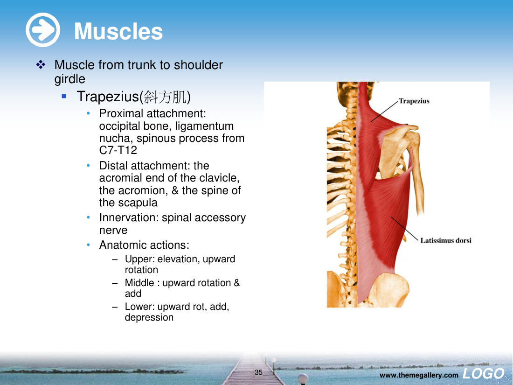
第 9 題 伏地挺身時，在側邊肋骨處與肩胛骨間可以看到鼓起的肌肉是？
- 前鋸肌
- 腹內側斜肌
- 闊背肌
- 腰方肌
看答案與詳解
答案：(A) 前鋸肌
前鋸肌（serratus anterior）起源於第 1~8/9 肋骨側面，向後附著於肩胛骨內側緣。在進行伏地挺身或推送物體時，前鋸肌強烈收縮以將肩胛骨緊貼胸壁並向前推，會於側胸壁展現出獨特的鋸齒狀肌腹形貌。
肌動學期中考練習測驗（10/30）第 10–17 題
第 10 題 下列有關正常「肩胛肱骨節律」scapulohumeral rhythm的敘述何者錯誤？
- 肩胛骨scapula的動作比盂肱關節glenohumeral joint大
- 可維護glenohumeral joint的穩定度
- 增加三角肌(deltoid)的收縮效果
- 可增加手舉高的角度
看答案與詳解
答案：(A) 肩胛骨scapula的動作比盂肱關節glenohumeral joint大
手臂高舉 180° 時，標準的肩胛肱骨節律比例為 2:1，即盂肱關節（GH joint）負責約 120° 的活動度，而肩胛骨（ST joint）負責約 60° 的上旋活動度。因此盂肱關節的活動角度大於肩胛骨，(A) 敘述錯誤。
講義 2-p.33：額狀面外展 30° 之後才是 2:1；肩胛平面是 GH:ST＝1.25:1。
第 11 題 當你坐有扶手的椅子時，手臂支撐在座椅扶手上，下列那一肩胛肌肉的作用與身體撐起無關？
- 下斜方肌
- 菱形肌
- 胸小肌
- 闊背肌
看答案與詳解
答案：(B) 菱形肌
手臂支撐扶手將身體抬高（Trunk elevation）時，主要需要下壓肩胛骨（scapular depression）的肌肉作用（包含下斜方肌、胸小肌與闊背肌）。菱形肌（rhomboids）的主要功能為肩胛骨後收（retraction）與下旋（downward rotation），與撐起身體時的下壓動作無關。
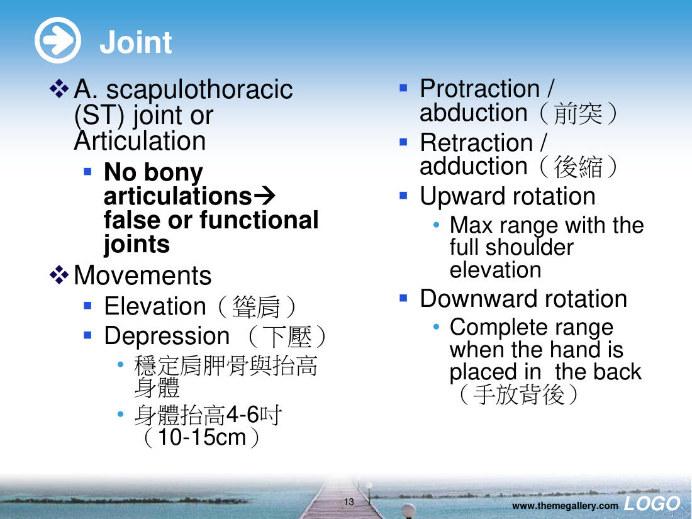
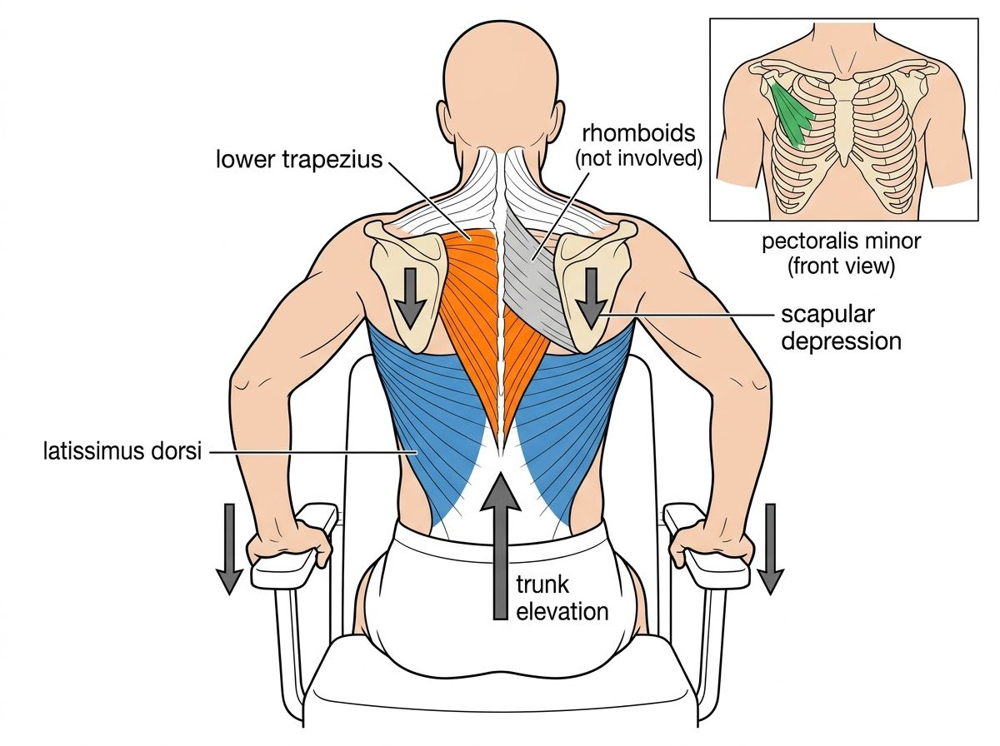
第 12 題 下列關於上肢骨骼關節的敘述，何者正確？
- 肩關節（shoulder joint）屬於髁狀關節（condylar joint）
- 橈骨（radius）不與肱骨（humerus）形成關節
- 鎖骨（clavicle）的兩端分別與肱骨（humerus）及胸骨（sternum）形成關節
- 尺骨（ulna）不直接與腕骨（carpus）形成關節
看答案與詳解
答案：(D) 尺骨（ulna）不直接與腕骨（carpus）形成關節
(A) 盂肱關節為球窩關節（ball-and-socket joint）。
(B) 橈骨頭與肱骨小頭形成肱橈關節（humeroradial joint）。
(C) 鎖骨兩端分別與肩峰（肩胛骨）及胸骨柄形成關節，不直接接觸肱骨。
(D) 尺骨遠端與腕骨間隔有三角纖維軟骨複合體（TFCC），因此尺骨不直接與近排腕骨構成關節面，故 (D) 正確。
第 13 題 下列哪一個肌肉不屬於旋轉袖肌群？
- 棘上肌（supraspinatus）
- 大圓肌 (teres major)
- 棘下肌（infraspinatus）
- 肩胛下肌（subscapularis）
看答案與詳解
答案：(B) 大圓肌 (teres major)
旋轉肌袖（Rotator Cuff, 口訣 SITS）由四塊肌肉組成：棘上肌（Supraspinatus）、棘下肌（Infraspinatus）、小圓肌（Teres minor）與肩胛下肌（Subscapularis）。大圓肌不屬於旋轉肌袖。
第 14 題 關於盂肱關節的穩定度的敘述，下列何者正確？
①關節盂（glenoid fossa）有足夠的深度，可包覆肱骨頭而維持足夠關節穩定度
②關節唇（labrum）增加關節盂深度，因此增加盂肱關節的穩定度
③關節囊強壯且緊繃是盂肱關節穩定度主要來源
④當舉手時旋轉肌袖肌群會一起收縮，將肱骨頭拉入關節盂內，以增加穩定度
- ①④
- ①②
- ③④
- ②④
看答案與詳解
答案：(D) ②④
① 關節盂淺而平坦，僅能接觸約 1/3 的肱骨頭，骨骼結構本身穩定度極低（①錯誤）。
② 關節唇能增加約 50% 的關節盂深度，有效增加關節穩定度（②正確）。
③ 盂肱關節囊結構相對鬆弛，以提供大範圍活動度，故被動限制能力有限（③錯誤）。
④ 旋轉肌袖發揮動態穩定（dynamic stabilization）作用，收縮時能將肱骨頭穩定向內壓入關節盂中央（④正確）。
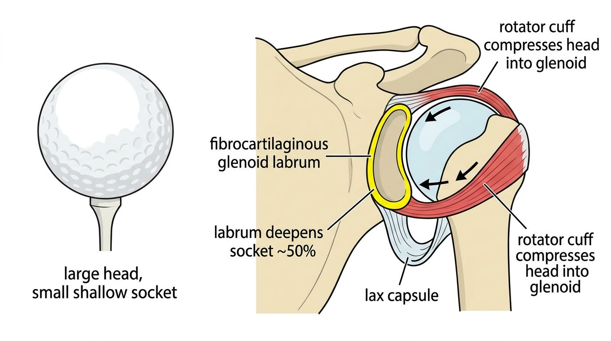
第 15 題 在肱骨小結節可以觸診到哪條肌肉的附著點？
- 闊背肌
- 前鋸肌
- 肩胛下肌
- 大圓肌
看答案與詳解
答案：(C) 肩胛下肌
肩胛下肌（subscapularis）的止點位於肱骨小結節（lesser tubercle）。大圓肌與闊背肌則分別附著於結節間溝（bicipital groove）的內側唇與溝底。
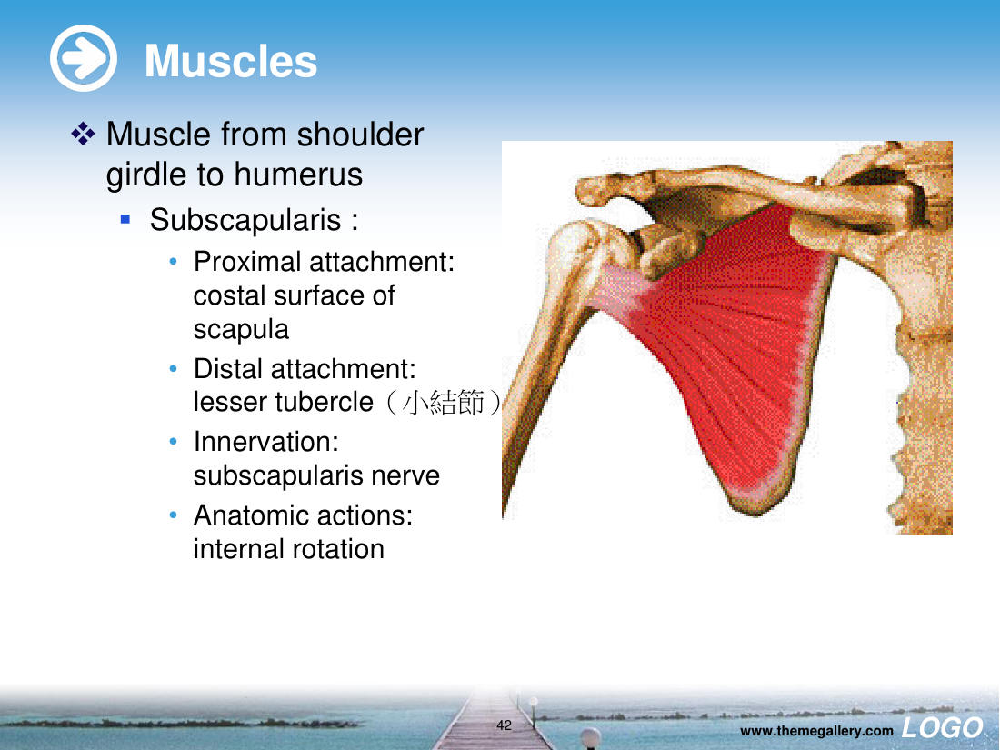
第 16 題 下列那條肌肉對於肩胛上轉的啟動（initiation of upward rotation）有最大的助益？
- 下斜方肌（lower trapezius）
- 上斜方肌（upper trapezius）
- 前鋸肌（serratus anterior）
- 中斜方肌（middle trapezius）
看答案與詳解
答案：(B) 上斜方肌（upper trapezius）
在肩關節抬高/外展的初期階段（0~60°），上斜方肌（upper trapezius）最先收縮拉動鎖骨與肩峰，對「啟動」肩胛骨上旋作用最大；隨著舉高角度增加，前鋸肌與下斜方肌才會展現出更顯著的力偶輸出。
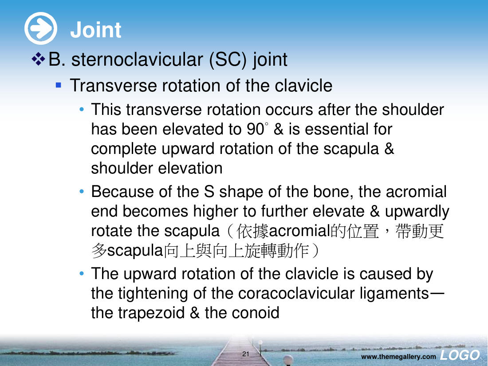
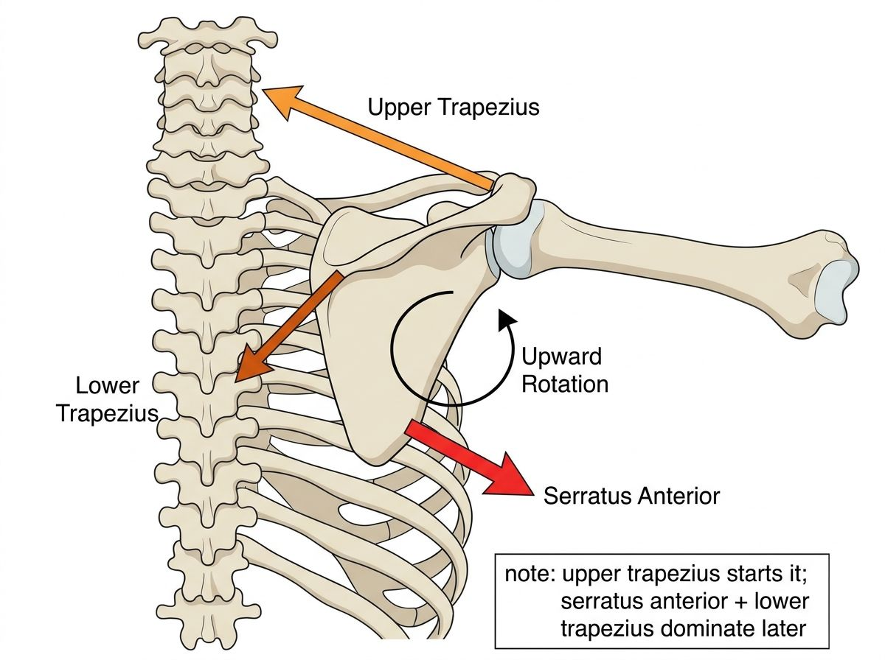
第 17 題 肱二頭肌(biceps brachii)的功能,下列敘述何者正確?
- 肘屈肌、前臂旋前肌、肩屈肌
- 肘屈肌、前臂旋後肌、肩屈肌
- 肘屈肌、前臂旋後肌、肩伸肌
- 肘屈肌、前臂旋前肌、肩伸肌
看答案與詳解
答案：(B) 肘屈肌、前臂旋後肌、肩屈肌
肱二頭肌（biceps brachii）跨越肩與肘兩個關節，主要運動功能包括：屈曲肘關節（elbow flexion）、使前臂旋後（forearm supination，特別在手肘屈曲 90 度時力矩最大）以及協助屈曲肩關節（shoulder flexion）。
肌動學期中考練習測驗（10/30）第 18–25 題
第 18 題 肌肉與肌腱常常被視為一個整體單位，可分為收縮部分、序列彈性部分、與並列彈性部分。下列何者屬於序列彈性部分？
- 肌纖維膜（sarcolemma）
- 肌束膜（perimysium）
- 肌外膜（epimysium）
- 肌腱
看答案與詳解
答案：(D) 肌腱
在希爾肌肉模型（Hill's muscle model）中：
序列彈性元件（Series Elastic Component, SEC）：與肌節串聯，主要代表結構為肌腱（tendon）。
並列彈性元件（Parallel Elastic Component, PEC）：與肌節並聯，包含肌外膜、肌束膜、肌內膜及肌纖維膜等結締組織膜。
第 19 題 肱二頭肌長頭（long head of biceps brachii）的韌帶通過下列何者？
- 髁間線（intercondylar line）
- 結節間溝（intertubercular sulcus）
- 髁間窩（intercondylar fossa）
- 轉子間線（intertrochanteric line）
看答案與詳解
答案：(B) 結節間溝（intertubercular sulcus）
肱二頭肌長頭肌腱起自肩胛骨關節上結節，穿過盂肱關節囊後，行走於肱骨大結節與小結節之間的結節間溝（intertubercular sulcus / bicipital groove）內。
題目寫「韌帶」，其實是肱二頭肌長頭的肌腱。
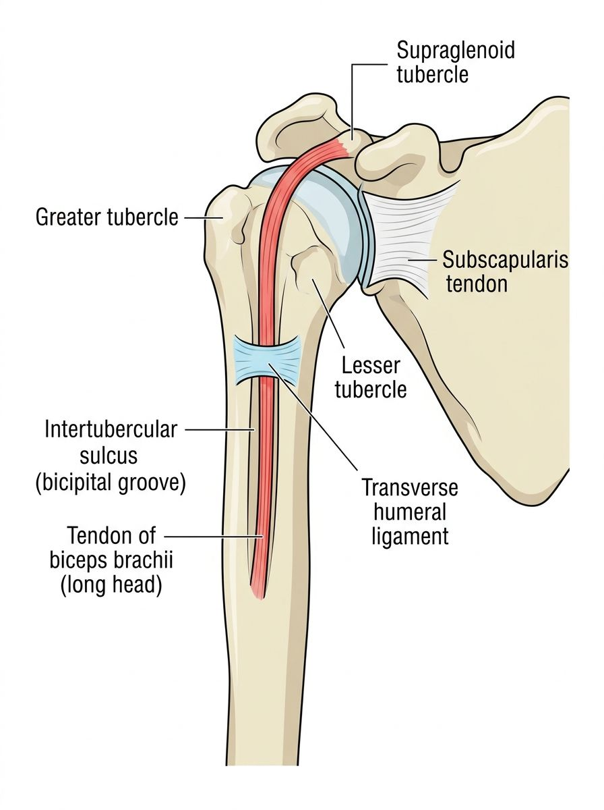
第 20 題 在站立的姿勢下，將兩手高舉過頭，會使得：
- 身體重心位置提高
- 身體重心位置維持不動
- 身體側向穩定性增加
- 身體重心位置降低
看答案與詳解
答案：(A) 身體重心位置提高
人體總重心（Center of Gravity, COG）取決於全身質量的空間分布。當雙手舉高過頭時，上肢質量向上位移，導致身體總重心位置向上提高，靜態平衡與穩定度相對降低。
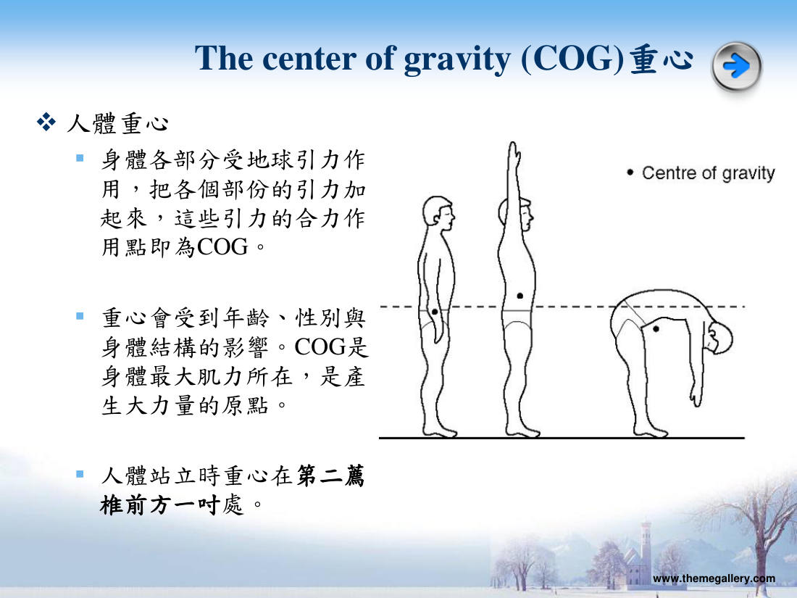
第 21 題 下列旋轉袖（rotator cuff）肌肉中，何者能內旋手臂？
- 棘下肌（infraspinatus）
- 棘上肌（supraspinatus）
- 肩胛下肌（subscapularis）
- 小圓肌（teres minor）
看答案與詳解
答案：(C) 肩胛下肌（subscapularis）
肩胛下肌（subscapularis）：位於肩胛骨前方，附著於肱骨小結節，收縮時可使手臂內旋（internal rotation）。
棘下肌與小圓肌：主要負責手臂外旋（external rotation）。
棘上肌：主要負責啟動手臂外展（abduction）。
第 22 題 盂肱關節外展時，下列那些肌肉作用的力偶，控制肩胛骨上旋（upward rotation）動作？
- 前鋸肌－下斜方肌
- 菱形肌－下斜方肌
- 提肩胛肌－上斜方肌
- 闊背肌－上斜方肌
看答案與詳解
答案：(A) 前鋸肌－下斜方肌
肩胛骨上旋（upward rotation）的三大力偶肌肉為：上斜方肌（上拉）、下斜方肌（下拉內側）與前鋸肌（向前外拉動下角）。選項中 (A) 前鋸肌－下斜方肌屬於此力偶組合。
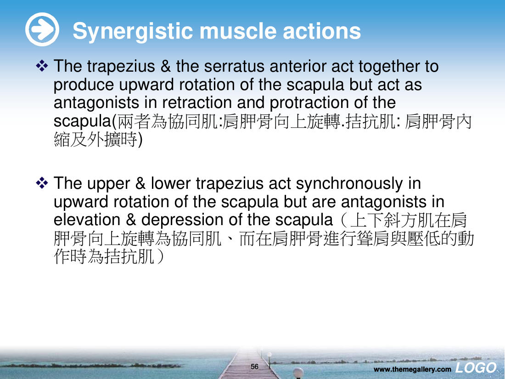
第 23 題 下列那一塊肌肉會將肩胛骨往下拉（depression）？
- 菱形肌（rhomboids）
- 上斜方肌（upper trapezius）
- 胸小肌（pectoralis minor）
- 提肩胛肌（levator scapulae）
看答案與詳解
答案：(C) 胸小肌（pectoralis minor）
胸小肌起於第 3-5 肋骨，附著於喙突，收縮時會將肩胛骨向前下方拉動（scapular depression & anterior tilt）。下斜方肌亦具備下壓功能。而菱形肌、提肩胛肌與上斜方肌作用均為上提肩胛骨（elevation）。
講義 2-p.37 寫胸小肌起於第 2–5 肋（詳解寫 3–5 肋），考試依講義。
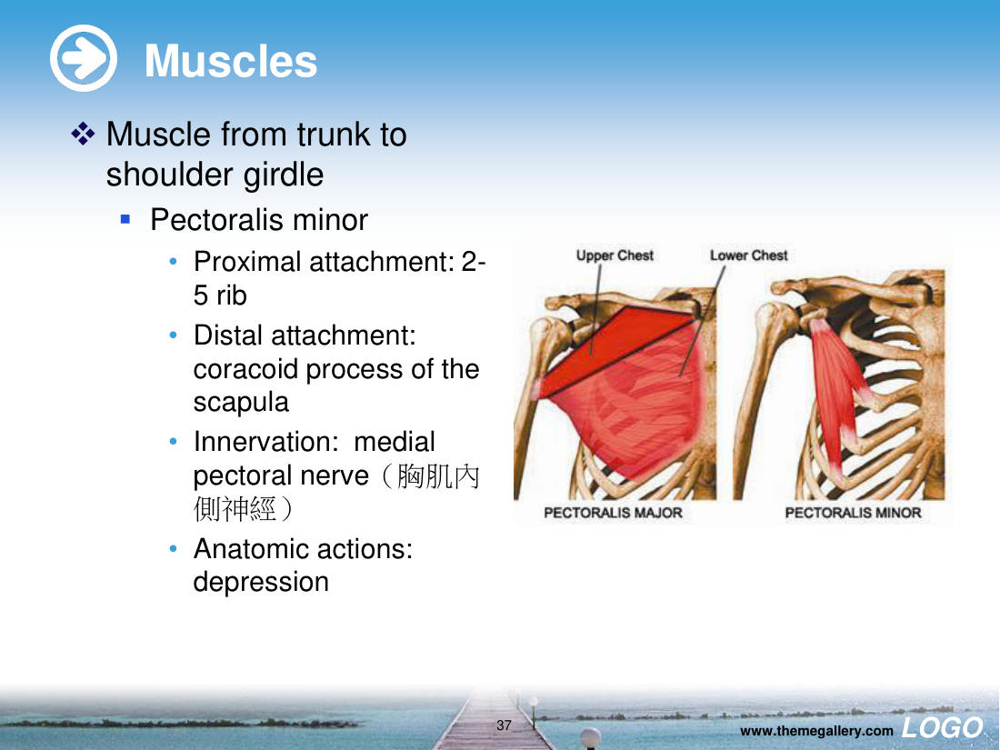
第 24 題 下列有關肩關節外展的敘述何者正確？
- 要到外展 120 度一定要同時配合肩關節內轉才能達成
- 外展到 90 度時，鎖骨已停止旋轉
- 疼痛弧（painful arc）常發生在外展的 0~60 度
- 在起始階段多依靠棘上肌用力
看答案與詳解
答案：(D) 在起始階段多依靠棘上肌用力
(A) 肩關節外展時需配合外轉（external rotation）以防止肱骨大結節撞擊肩峰。
(B) 外展超過 90 度時，鎖骨會持續產生後旋（posterior rotation）。
(C) 肩關節擠壓症候群的疼痛弧（painful arc）通常出現在外展 60°~120° 的區間。
(D) 在手臂外展前 0~30° 的起始階段，主要由棘上肌（supraspinatus）負責啟動與靜態壓緊關節面，故 (D) 正確。
講義 2-p.21：鎖骨的轉動在肩上舉超過 90° 後才發生 → (B) 錯。
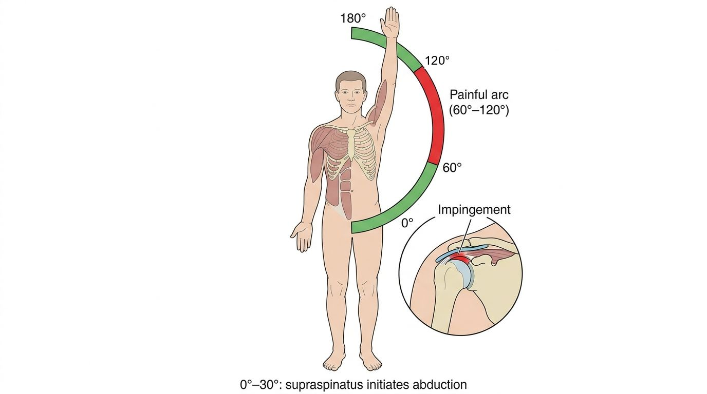
第 25 題 有關骨骼肌分類與功能之敘述，下列何者正確？
- 第一型肌肉纖維（type I fiber）較第二型肌肉纖維（type II fiber）更直接利用無氧代謝進行三磷酸腺苷（ATP）合成
- 支配第一型肌肉纖維（type I fiber）之運動神經元，其神經傳導速度較第二型肌肉纖維（type II fiber）之運動神經元快
- 第二型肌肉纖維（type II fiber）之肌漿網（sarcoplasmic reticulum）較第一型肌肉纖維（type I fiber）之肌漿網能更快釋放或儲存鈣離子
- 第二型A肌肉纖維（type IIa fiber）較第二型B肌肉纖維（type IIb fiber）更直接利用無氧代謝進行三磷酸腺苷（ATP）合成
看答案與詳解
答案：(C) 第二型肌肉纖維（type II fiber）之肌漿網（sarcoplasmic reticulum）較第一型肌肉纖維（type I fiber）之肌漿網能更快釋放或儲存鈣離子
(A) 第一型纖維（慢縮肌）富含粒線體與肌紅蛋白，主要依賴有氧代謝；第二型纖維（快縮肌）較依賴無氧糖解。
(B) 第二型纖維由較粗大的 α 運動神經元支配，神經傳導速度快於第一型。
(C) 第二型肌肉纖維具有更發達的肌漿網（SR）及高活性的鈣離子幫浦（SERCA），能極為迅速地釋放與回收鈣離子，從而達成迅速收縮與放鬆，故 (C) 正確。
(D) Type IIb 纖維較 Type IIa 纖維更直接利用無氧代謝。
講義 1-p.51 的表頭把 Type IIA／IIB 標反了（IIA 才是 intermediate、IIB 是 fast）；以 1-p.48 的 IIa＝FOG、IIb＝FG 為準。
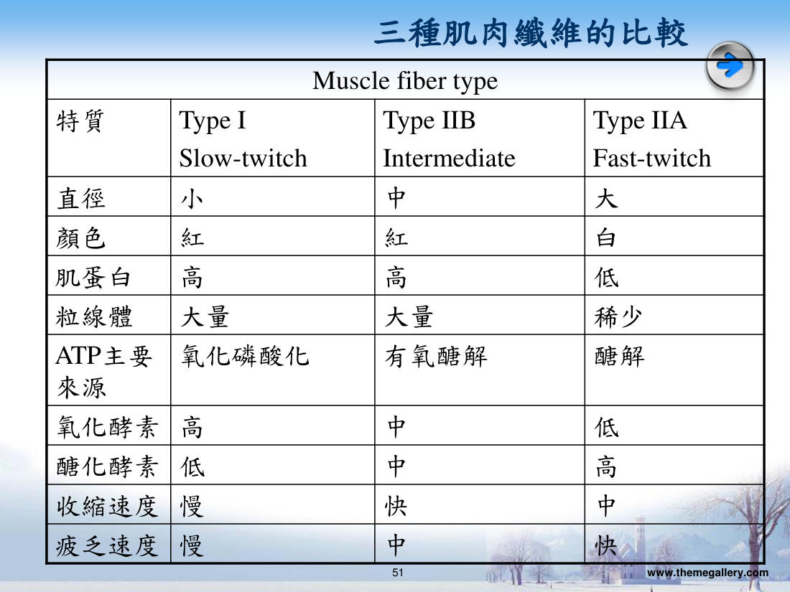